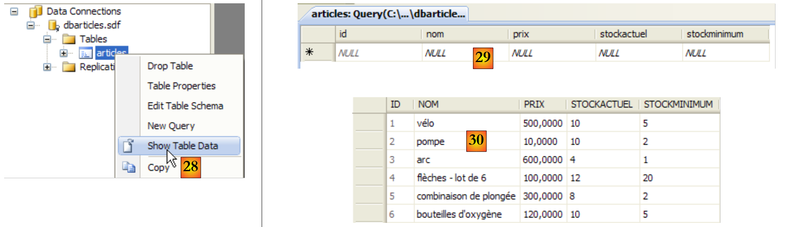
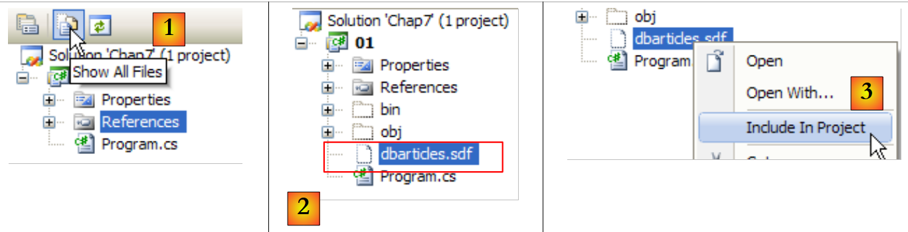
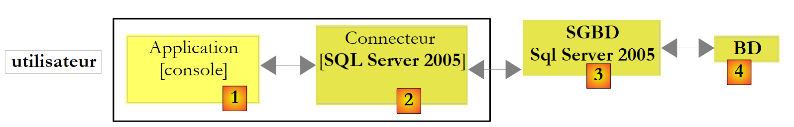
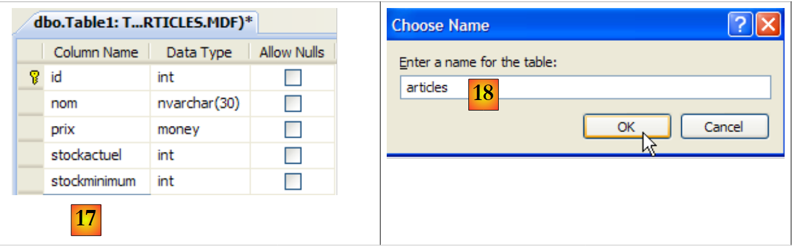
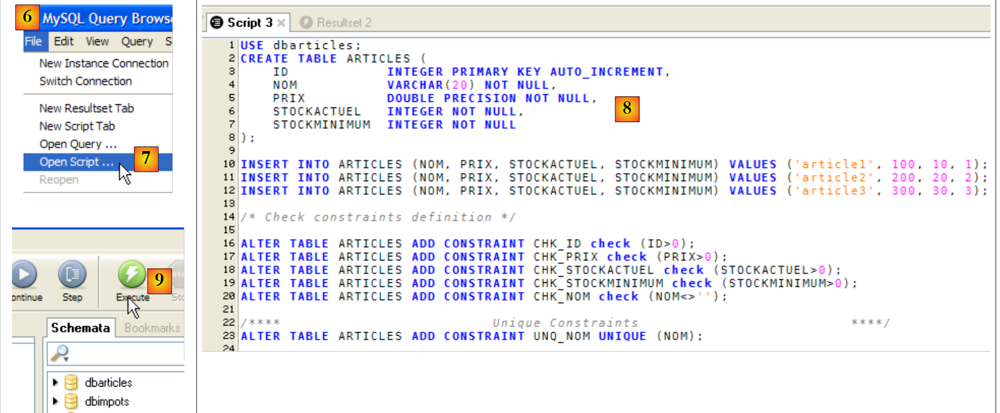
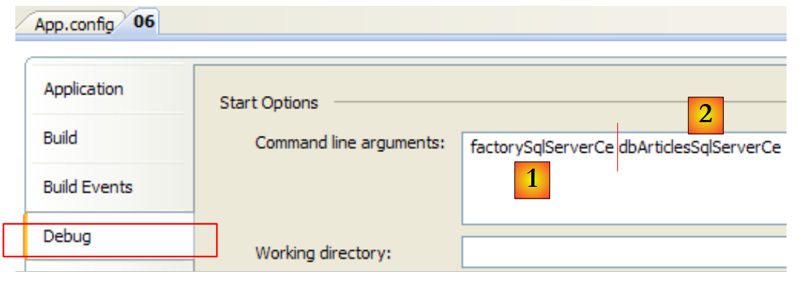
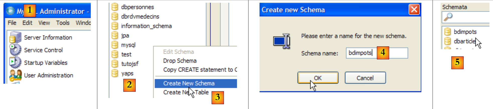
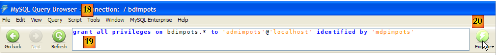
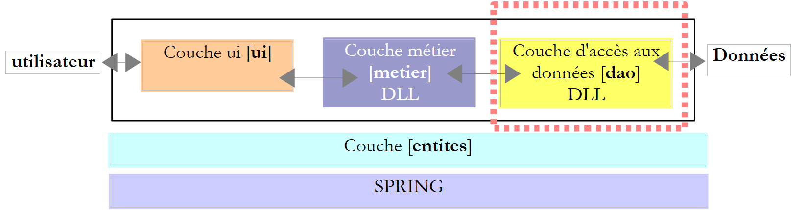
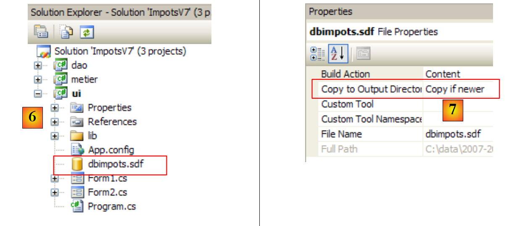

9. Acceso a las bases de datos
9.1. Conector ADO.NET
Repasemos la arquitectura por capas utilizada en varias ocasiones
 |
En los ejemplos analizados, la capa [dao] ha utilizado hasta ahora dos tipos de fuentes de datos:
- datos incrustados directamente en el código
- datos procedentes de archivos de texto
En este capítulo analizamos el caso en el que los datos proceden de una base de datos. La arquitectura de tres capas evoluciona entonces hacia una arquitectura multicapa. Existen varias. Vamos a estudiar los conceptos básicos con la siguiente:
 |
En el esquema anterior, la capa [dao] [1] se comunica con la capa SGBD [3] a través deuna biblioteca de clases propia del SGBD utilizado y suministrada junto con él. Esta capa implementa funcionalidades estándar agrupadas bajo el término ADO (Active X Data Objects). A una capa de este tipo se la denomina «proveedor» (en este caso, proveedor de acceso a una base de datos) o «conector». La mayoría de los SGBD disponen ahora de un conector ADO.NET, lo que no ocurría en los inicios de la plataforma .NET. Los conectores .NET no ofrecen una interfaz estándar para la capa [dao], por lo que esta incluye en su código los nombres de las clases del conector. Si se cambia de SGBD, se cambia de conector y de clases, por lo que hay que modificar la capa [dao]. Se trata de una arquitectura eficaz, ya que el conector .NET, al haber sido escrito para un SGBD concreto, sabe cómo sacarle el máximo partido, y rígida, ya que cambiar de SGBD implica cambiar la capa [dao]. Este segundo argumento debe relativizarse: las empresas no cambian de SGBD con mucha frecuencia. Por otra parte, veremos más adelante que, desde la versión 2.0 de .NET, existe un conector genérico que aporta flexibilidad sin sacrificar el rendimiento.
9.2. Los dos modos de explotación de una fuente de datos
La plataforma .NET permite explotar una fuente de datos de dos maneras diferentes:
- modo conectado
- modo desconectado
En modo conectado, la aplicación
- abre una conexión con la fuente de datos
- trabaja con la fuente de datos en modo lectura/escritura
- cierra la conexión
En modo desconectado, la aplicación
- abre una conexión con la fuente de datos
- obtiene una copia en memoria de todos o parte de los datos de la fuente
- cierra la conexión
- trabaja con la copia en memoria de los datos en modo lectura/escritura
- cuando termina el trabajo, abre una conexión, envía los datos modificados a la fuente de datos para que los incorpore y cierra la conexión
Aquí solo analizamos el modo conectado.
9.3. Conceptos básicos del manejo de una base de datos
Vamos a exponer los principales conceptos del uso de una base de datos con SQL Server Compact 3.5. Este SGBD se incluye con Visual Studio Express. Se trata de un servidor ligero que solo puede gestionar un usuario a la vez. No obstante, es suficiente para iniciarse en la programación con bases de datos. Más adelante, presentaremos otros servidores.
La arquitectura utilizada será la siguiente:
 |
Una aplicación de consola [1] utilizará una base de datos de tipo SqlServer Compact [3,4] a través del conector Ado.Net de este SGBD [2].
9.3.1. : base de datos de ejemplo
Vamos a crear la base de datos directamente en Visual Studio Express. Para ello, creamos un nuevo proyecto de tipo consola.
 |
- [1]: el proyecto
- [2]: abrimos la vista «Explorador de bases de datos»
- [3]: creamos una nueva conexión
 |
- [4]: se selecciona el tipo de SGBD
- [5,6]: se elige el SGBD SQL Server Compact
- [7]: se crea la base de datos
- [8]: una base de datos SQL Server Compact se encapsula en un único archivo con la extensión .sdf. Se indica dónde crearla; en este caso, en la carpeta del proyecto C#.
- [9]: se le ha asignado el nombre [dbarticles.sdf] a la nueva base de datos
- [10]: se selecciona el idioma francés. Esto afecta a las operaciones de ordenación.
- [11,12]: la base de datos se puede proteger con una contraseña. En este caso, «dbarticles».
- [13]: se confirma la página de información. La base de datos se va a crear físicamente:
 |
- [14]: el nombre de la base de datos que se acaba de crear
- [15]: marcamos la opción «Save my password» para no tener que volver a introducirla cada vez
- [16]: se comprueba la conexión
- [17]: todo va bien
- [18]: se confirma la página de información
- [19]: la conexión aparece en el explorador de bases de datos
- [20]: por ahora, la base de datos no tiene tablas. Creamos una. Un artículo tendrá los siguientes campos:
- id: un identificador único (clave primaria)
- nom: nombre del artículo —único—
- prix: precio del artículo
- stockactuel: su stock actual
- stockminimum: el stock mínimo por debajo del cual hay que reponer el artículo
 |
- [21]: el campo [id] es de tipo entero y es la clave primaria [22] de la tabla.
- [23]: esta clave primaria es de tipo Identity. Este concepto, propio del servidor SGBD SQL, indica que la clave primaria será generada por el propio SGBD. En este caso, la clave primaria será un número entero que comienza en 1 y se incrementa en 1 con cada nueva clave.
 |
- [24]: se crean los demás campos. Cabe destacar que el campo [nom] tiene una restricción de unicidad « » [25].
- [26]: se asigna un nombre a la tabla
- [27]: tras validar la estructura de la tabla, esta aparece en la base de datos.
 |
- [28]: se solicita ver el contenido de la tabla
- [29]: por el momento está vacía
- [30]: la rellenamos con algunos datos. Una línea se valida en cuanto pasamos a introducir la siguiente. El campo [id] no se rellena: se genera automáticamente al validar la línea.
Ahora solo nos queda configurar el proyecto para que esta base de datos, que actualmente se encuentra en la raíz del proyecto, se copie automáticamente en la carpeta de ejecución del proyecto:
 |
- [1]: se solicita ver todos los archivos
- [2]: aparece la base de datos [dbarticles.sdf]
- [3]: se incluye en el proyecto
 |
- [4]: la operación de añadir una fuente de datos a un proyecto inicia un asistente que aquí no necesitamos [5].
- [6]: la base de datos ya forma parte del proyecto. Volvemos al modo normal [7].
- [8]: el proyecto con su base de datos
- [9]: en las propiedades de la base de datos, se puede ver ([10]) que esta se copiará automáticamente en la carpeta de ejecución del proyecto. Es ahí donde el programa que vamos a escribir la recuperará.
Ahora que disponemos de una base de datos, podremos utilizarla. Antes de nada, repasemos algunos conceptos básicos SQL.
9.3.2. Los cuatro comandos básicos del lenguaje SQL
SQL (Structured Language Query) es un lenguaje, parcialmente normalizado, para la consulta y actualización de bases de datos. Todos los SGBD respetan la parte normalizada de SQL, pero añaden al lenguaje extensiones propias que aprovechan ciertas particularidades del SGBD. Ya hemos visto dos ejemplos: la generación automática de claves primarias y los tipos permitidos para las columnas de una tabla suelen depender del SGBD.
Los cuatro comandos básicos del lenguaje SQL que presentamos están estandarizados y son aceptados por todos los SGBD:
La consulta que permite obtener los datos contenidos en una base de datos. Solo son obligatorias las palabras clave de la primera línea; las demás son opcionales. Existen otras palabras clave que no se muestran aquí.
| |
Inserta una fila en la tabla. (col1, col2, ...) especifica las columnas de la fila que se van a inicializar con los valores (val1, val2, ...). | |
Actualiza las filas de la tabla que cumplan la condición (todas las filas si no hay «where»). Para estas filas, la columna «coli» recibe el valor «vali» | |
Elimina todas las filas de la tabla que cumplen la condición |
Vamos a escribir una aplicación de consola que permita emitir órdenes SQL en la base de datos [dbarticles] que hemos creado anteriormente. A continuación se muestra un ejemplo de ejecución. Se invita al lector a comprender las órdenes SQL emitidas y sus resultados.
- línea 1: la denominada cadena de conexión: contiene todos los parámetros necesarios para conectarse a la base de datos.
- línea 3: se solicita el contenido de la tabla [articles]
- línea 16: se inserta una nueva línea. Cabe señalar que el campo id no se inicializa en esta operación, ya que es el SGBD el que generará el valor de este campo.
- línea 19: comprobación. Línea 28: la línea se ha añadido correctamente.
- línea 30: se aumenta en un 10 % el precio del artículo que se acaba de añadir.
- línea 33: se comprueba
- línea 42: se ha aplicado correctamente el aumento de precio
- línea 44: se elimina el artículo que se había añadido anteriormente
- línea 47: se comprueba
- líneas 53-55: el artículo ya no está.
9.3.3. Las interfaces básicas de ADO.NET para el modo conectado
Volvamos al esquema de una aplicación que utiliza una base de datos a través de un conector ADO.NET:
 |
En modo conectado, la aplicación:
- abre una conexión con la fuente de datos
- trabaja con la fuente de datos en modo lectura/escritura
- cierra la conexión
Hay tres interfaces ADO.NET que intervienen principalmente en estas operaciones:
- IDbConnection, que encapsula las propiedades y métodos de la conexión.
- IDbCommand, que encapsula las propiedades y métodos de la orden SQL ejecutada.
- IDataReader, que encapsula las propiedades y métodos del resultado de una orden SQL Select.
La interfaz IDbConnection
Sirve para gestionar la conexión con la base de datos. Los métodos M y las propiedades P de esta interfaz que utilizaremos serán los siguientes:
Nombre | Tipo | Función |
P | cadena de conexión a la base de datos. Especifica todos los parámetros necesarios para establecer la conexión con una base de datos concreta. | |
M | abre la conexión con la base de datos definida por ConnectionString | |
M | cierra la conexión | |
M | inicia una transacción. | |
P | Estado de la conexión: ConnectionState.Closed, ConnectionState.Open, ConnectionState.Connecting, ConnectionState.Executing, ConnectionState.Fetching, ConnectionState.Broken |
Si Connection es una clase que implementa la interfaz IDbConnection, la conexión se puede establecer de la siguiente manera:
La interfaz IDbCommand
Sirve para ejecutar una orden SQL o un procedimiento almacenado. Los métodos M y las propiedades P de esta interfaz que utilizaremos serán los siguientes:
Nombre | Tipo | Función |
P | indica lo que hay que ejecutar; toma sus valores de una enumeración: - CommandType.Text: ejecuta la orden SQL definida en la propiedad CommandText. Es el valor por defecto. - CommandType.StoredProcedure: ejecuta un procedimiento almacenado en la base de datos | |
P | - el texto de la orden SQL que se ejecutará si CommandType = CommandType.Text - el nombre del procedimiento almacenado que se ejecutará si CommandType = CommandType.StoredProcedure | |
P | la conexión IDbConnection que se utilizará para ejecutar la orden SQL | |
P | la transacción IDbTransaction en la que se ejecutará la orden SQL | |
P | la lista de parámetros de una orden SQL configurada. La orden «update articles set precio=precio*1.1 where id=@id» tiene el parámetro @id. | |
M | para ejecutar una orden SQL Select. Se obtiene un objeto IDataReader que representa el resultado de Select. | |
M | para ejecutar una orden SQL: Actualizar, Insertar, Eliminar. Se obtiene el número de líneas afectadas por la operación (actualizadas, insertadas, eliminadas). | |
M | para ejecutar una orden SQL Select que solo devuelve un único resultado, como en: select count(*) from articles. | |
M | para crear los parámetros IDbParameter de una orden SQL configurada. | |
M | permite optimizar la ejecución de una consulta parametrizada cuando se ejecuta varias veces con parámetros diferentes. |
Si Command es una clase que implementa la interfaz IDbCommand, la ejecución de una orden SQL sin transacción tendrá la siguiente forma:
La interfaz IDataReader
Sirve para encapsular los resultados de una orden SQL Select. Un objeto IDataReader representa una tabla con filas y columnas, que se procesan secuencialmente: primero la primera fila, luego la segunda, etc. Los métodos M y las propiedades P de esta interfaz que utilizaremos serán los siguientes:
Nombre | Tipo | Función |
P | el número de columnas de la tabla IDataReader | |
M | GetName(i) devuelve el nombre de la columna n.º i de la tabla IDataReader. | |
P | Item[i] representa la columna n.º i de la fila actual de la tabla IDataReader. | |
M | pasa a la siguiente línea de la tabla IDataReader. Devuelve el valor booleano True si se ha podido realizar la lectura; de lo contrario, devuelve False. | |
M | cierra la tabla IDataReader. | |
M | GetBoolean(i): devuelve el valor booleano de la columna n.º i de la línea actual de la tabla IDataReader. Los demás métodos análogos son los siguientes: GetDateTime, GetDecimal, GetDouble, GetFloat, GetInt16, GetInt32, GetInt64, GetString. | |
M | Getvalue(i): devuelve el valor de la columna n.º i de la línea actual de la tabla IDataReader como tipo object. | |
M | IsDBNull(i) devuelve True si la columna n.º i de la fila actual de la tabla IDataReader no tiene valor, lo cual se simboliza con el valor SQL NULL. |
La consulta de un objeto IDataReader suele ser similar a lo siguiente:
9.3.4. Gestión de errores
Repasemos la arquitectura de una aplicación con base de datos:
 |
La capa [dao] puede encontrar numerosos errores durante el funcionamiento de la base de datos. Estos se notificarán como excepciones lanzadas por el conector ADO.NET. El código de la capa [dao] debe gestionarlas. Toda operación con la base de datos debe realizarse dentro de un bloque «try / catch / finally» para interceptar y gestionar cualquier excepción que pueda surgir y liberar los recursos que sea necesario. Así, el código anterior para procesar el resultado de una orden Select queda de la siguiente forma:
Pase lo que pase, los objetos IDataReader y IDbConnection deben cerrarse. Por eso, este cierre se realiza en las cláusulas finally.
El cierre de la conexión y el del objeto IDataReader pueden automatizarse con una cláusula «using»:
- En la línea 3, la cláusula «using» garantiza que la conexión abierta en el bloque «using(...){...}» se cerrará fuera de este, independientemente de cómo se salga del bloque: de forma normal o por la aparición de una excepción. Se ahorra un finally, pero el interés no radica en este ahorro menor. El uso de un using evita que el desarrollador tenga que cerrar la conexión él mismo. Ahora bien, olvidarse de cerrar una conexión puede pasar desapercibido y «bloquear» la aplicación de una forma que parecerá aleatoria, cada vez que el SGBD alcance el número máximo de conexiones abiertas que puede soportar.
- Línea 11: se procede de forma análoga para cerrar el objeto IDataReader.
9.3.5. Configuración del proyecto de ejemplo
El proyecto final quedará así:
 |
- [1]: el proyecto tendrá un archivo de configuración [App.config]
- [2]: utiliza clases de dos DLL que no están referenciadas por defecto y que, por lo tanto, hay que añadir a las referencias del proyecto:
- [System.Configuration] para utilizar el archivo de configuración [App.config]
- [System.Data.SqlServerCe] para utilizar la base de datos SQL Server Compact
- [3, 4]: explica cómo añadir referencias a un proyecto.
- [5, 6]: recuerda cómo añadir el archivo [App.config] a un proyecto.
El archivo de configuración [App.config] será el siguiente:
<?xml version="1.0" encoding="utf-8" ?>
<configuration>
<connectionStrings>
<add name="dbSqlServerCe" connectionString="Data Source=|DataDirectory|\dbarticles.sdf;Password=dbarticles;" />
</connectionStrings>
</configuration>
- líneas 3-5: la etiqueta <connectionStrings>, en plural, define cadenas de conexión a bases de datos. Una cadena de conexión tiene el formato «parámetro1=valor1;parámetro2=valor2;...». Define todos los parámetros necesarios para establecer una conexión con una base de datos concreta. Estas cadenas de conexión varían con cada SGBD. La página web [http://www.connectionstrings.com/] indica el formato de las mismas para los principales SGBD.
- línea 4: define una cadena de conexión concreta, en este caso la de la base de datos SQL Server Compact dbarticles.sdf que hemos creado anteriormente:
- name = nombre de la cadena de conexión. El programa C# recupera la cadena de conexión a través de este nombre
- connectionString: la cadena de conexión para una base de datos SQL Server Compact
- DataSource: indica la ruta de la base de datos. La sintaxis |DataDirectory| indica la carpeta de ejecución del proyecto.
- Contraseña: la contraseña de la base de datos. Este parámetro no aparece si no hay contraseña.
El código C# para recuperar la cadena de conexión anterior es el siguiente:
string connectionString = ConfigurationManager.ConnectionStrings["dbSqlServerCe"].ConnectionString;
- ConfigurationManager es la clase de DLL [System.Configuration] que permite utilizar el archivo [App.config].
- ConnectionsStrings["nom"].ConnectionString: designa el atributo connectionString de la etiqueta < add name="nombre" connectionString="..."> de la sección <connectionStrings> de [App.config]
El proyecto ya está configurado. A continuación, analizaremos la clase [Program.cs], de la que ya hemos visto anteriormente un ejemplo de ejecución.
9.3.6. El programa de ejemplo
El programa [program.cs] es el siguiente:
using System;
using System.Collections.Generic;
using System.Data.SqlServerCe;
using System.Text;
using System.Text.RegularExpressions;
using System.Configuration;
namespace Chap7 {
class SqlCommands {
static void Main(string[] args) {
// consola de la aplicación: ejecuta consultas SQL introducidas mediante el teclado
// en una base de datos cuya cadena de conexión se obtiene de un archivo de configuración
// procesamiento del archivo de configuración [App.config]
string connectionString = null;
try {
connectionString = ConfigurationManager.ConnectionStrings["dbSqlServerCe"].ConnectionString;
} catch (Exception e) {
Console.WriteLine("Erreur de configuration : {0}", e.Message);
return;
}
// visualización de la cadena de conexión
Console.WriteLine("Chaîne de connexion à la base : [{0}]\n", connectionString);
// se crea un diccionario de los comandos SQL aceptados
string[] commandesSQL = new string[] { "select", "insert", "update", "delete" };
Dictionary<string, bool> dicoCommandes = new Dictionary<string, bool>();
for (int i = 0; i < commandesSQL.Length; i++) {
dicoCommandes.Add(commandesSQL[i], true);
}
// lectura y ejecución de los comandos SQL introducidos mediante el teclado
string requête = null; // texto de la consulta SQL
string[] champs; // los campos de la consulta
Regex modèle = new Regex(@"\s+"); // secuencia de espacios
// bucle de introducción y ejecución de los comandos SQL introducidos mediante el teclado
while (true) {
// solicitud de la consulta
Console.Write("\nRequête SQL (rien pour arrêter) : ");
requête = Console.ReadLine().Trim().ToLower();
// ¿Hecho?
if (requête == "")
break;
// se desglosa la consulta en campos
champs = modèle.Split(requête);
// ¿Consulta válida?
if (champs.Length == 0 || ! dicoCommandes.ContainsKey(champs[0])) {
// mensaje de error
Console.WriteLine("Requête invalide. Utilisez select, insert, update, delete ou rien pour arrêter");
// siguiente consulta
continue;
}
// ejecución de la consulta
if (champs[0] == "select") {
ExecuteSelect(connectionString, requête);
} else
ExecuteUpdate(connectionString, requête);
}
}
// ejecución de una consulta de actualización
static void ExecuteUpdate(string connectionString, string requête) {
...
}
// ejecución de una consulta Select
static void ExecuteSelect(string connectionString, string requête) {
....
}
}
}
- líneas 1-6: los espacios de nombres utilizados en la aplicación. La gestión de una base de datos SQL Server Compact requiere el espacio de nombres [System.Data.SqlServerCe] de la línea 3. Aquí existe una dependencia de un espacio de nombres propio de SGBD. De ello se deduce que habrá que modificar el programa si se cambia de SGBD.
- Línea 18: la cadena de conexión a la base de datos se lee del archivo [App.config] y se muestra en la línea 25. Se utilizará para establecer una conexión con la base de datos.
- Líneas 28-32: un diccionario que almacena los nombres de las cuatro órdenes autorizadas: select, insert, update, delete.
- líneas 40-62: el bucle de introducción de los comandos SQL tecleados y su ejecución en la base de datos
- línea 48: la línea introducida mediante el teclado se descompone en campos para determinar cuál es el primer término, que debe ser: select, insert, update, delete
- líneas 50-55: si la consulta no es válida, se muestra un mensaje de error y se pasa a la siguiente consulta.
- líneas 57-61: se ejecuta el comando SQL introducido. Esta ejecución adopta una forma diferente según se trate de una orden select o de una orden insert, update o delete. En el primer caso, la orden recupera datos de la base de datos sin modificarla; en el segundo, la actualiza sin recuperar datos. En ambos casos, se delega la ejecución a un método que necesita dos parámetros:
- la cadena de conexión que le permitirá conectarse a la base de datos
- la orden SQL que se va a ejecutar en esta conexión
9.3.7. Ejecución de una consulta SELECT
La ejecución de las órdenes SQL requiere los siguientes pasos:
- Conexión a la base de datos
- Envío de las órdenes SQL a la base de datos
- Procesamiento de los resultados de la orden SQL
- Cierre de la conexión
Los pasos 2 y 3 se repiten, ya que el cierre de la conexión solo tiene lugar al finalizar la explotación de la base de datos. Las conexiones abiertas son recursos limitados de un SGBD. Hay que ahorrarlas. Por ello, siempre se intentará limitar la duración de una conexión abierta. En el ejemplo analizado, la conexión se cierra tras cada orden SQL. Se abre una nueva conexión para la siguiente orden SQL. Abrir y cerrar una conexión es costoso. Para reducir este coste, algunos SGBD ofrecen el concepto de grupos de conexiones abiertas: durante la inicialización de la aplicación, se abren N conexiones y se asignan al grupo. Permanecerán abiertas hasta el final de la aplicación. Cuando la aplicación abre una conexión, recibe una de las N conexiones ya abiertas del grupo. Cuando cierra la conexión, esta simplemente se devuelve al grupo. La ventaja de este sistema es que resulta transparente para el desarrollador: no es necesario modificar el programa para utilizar el grupo de conexiones. La configuración del grupo de conexiones depende del SGBD.
En primer lugar, nos centramos en la ejecución de las órdenes SQL y Select. El método ExecuteSelect de nuestro programa de ejemplo es el siguiente:
// ejecución de una consulta SELECT
static void ExecuteSelect(string connectionString, string requête) {
// se gestionan las posibles excepciones
try {
using (SqlCeConnection connexion = new SqlCeConnection(connectionString)) {
// apertura de la conexión
connexion.Open();
// ejecuta sqlCommand con una consulta SELECT
SqlCeCommand sqlCommand = new SqlCeCommand(requête, connexion);
SqlCeDataReader reader= sqlCommand.ExecuteReader();
// Visualización de resultados
AfficheReader(reader);
}
} catch (Exception ex) {
// mensaje de error
Console.WriteLine("Erreur d'accès à la base de données (" + ex.Message + ")");
}
}
// visualización del lector
static void AfficheReader(IDataReader reader) {
...
}
- línea 2: el método recibe dos parámetros:
- la cadena de conexión [connectionString], que le permitirá conectarse a la base de datos
- la orden SQL Select [requête] que se va a ejecutar en esta conexión
- línea 4: cualquier operación con una base de datos puede generar una excepción que quizá queramos gestionar. Esto es aún más importante aquí, ya que las órdenes SQL proporcionadas por el usuario pueden contener errores sintácticos. Debemos poder indicárselo. Por lo tanto, todo el código se encuentra dentro de un try / catch.
- línea 5: aquí hay varias cosas:
- la conexión con la base de datos se inicializa con la cadena de conexión [connectionString]. Aún no está abierta. Se abrirá en la línea 7.
- La cláusula using (Ressource) {...} es una simplificación sintáctica que garantiza la liberación del recurso Ressource —en este caso, una conexión— al salir del bloque controlado por using.
- La conexión es de un tipo propietario: SqlCeConnection, específico del servidor SGBD SQL Server Compact.
- Línea 7: se abre la conexión. Es en este momento cuando se utilizan los parámetros de la cadena de conexión.
- Línea 9: se envía una orden SQL a través de un objeto propio SqlCeCommand. La línea 9 inicializa este objeto con dos datos: la conexión que se va a utilizar y la orden SQL que se va a enviar a través de ella. El objeto SqlCeCommand sirve tanto para ejecutar una orden Select como una orden Update, Insert o Delete. Sus propiedades y métodos se han descrito en el apartado 9.3.3.
- Línea 10: se ejecuta una orden SQL Select mediante el método ExecuteReader delobjeto SqlCeCommand, que devuelve un objeto IDataReader, cuyos métodos y propiedades se han presentado en el apartado 9.3.3.
- línea 12: la visualización de los resultados se confía al siguiente método AfficheReader:
// visualización del lector
static void AfficheReader(IDataReader reader) {
using (reader) {
// análisis de los resultados
// -- columnas
StringBuilder ligne = new StringBuilder();
int i;
for (i = 0; i < reader.FieldCount - 1; i++) {
ligne.Append(reader.GetName(i)).Append(",");
}
ligne.Append(reader.GetName(i));
Console.WriteLine("\n{0}\n{1}\n{2}\n", "".PadLeft(ligne.Length, '-'), ligne, "".PadLeft(ligne.Length, '-'));
// -- datos
while (reader.Read()) {
// análisis de la línea actual
ligne = new StringBuilder();
for (i = 0; i < reader.FieldCount; i++) {
ligne.Append(reader[i].ToString()).Append(" ");
}
Console.WriteLine(ligne);
}
}
}
- línea 2: el método recibe un objeto IDataReader. Cabe señalar que aquí hemos utilizado una interfaz y no una clase específica.
- línea 3: la cláusula using se utiliza para gestionar automáticamente el cierre del objeto IDataReader.
- líneas 8-10: se muestran los nombres de las columnas de la tabla de resultados de Select. Son las columnas coli de la consulta «select col1, col2, ... from table ...»
- líneas 14-21: se recorre la tabla de resultados y se muestran los valores de cada fila de la tabla.
- línea 18: se desconoce el tipo de la columna n.º i del resultado porque se desconoce la tabla consultada. Por lo tanto, no se puede utilizar la sintaxis reader.GetXXX(i), donde XXX es el tipo de la columna n.º i, ya que se desconoce dicho tipo. Por lo tanto, se utiliza la sintaxis reader.Item[i].ToString() para obtener la representación de la columna n.º i en forma de cadena de caracteres. La sintaxis reader.Item[i].ToString() puede abreviarse como reader[i].ToString().
9.3.8. Ejecución de una orden de actualización: INSERT, UPDATE, DELETE
El código del método ExecuteUpdate es el siguiente:
// ejecución de una consulta de actualización
static void ExecuteUpdate(string connectionString, string requête) {
// gestión de posibles excepciones
try {
using (SqlCeConnection connexion = new SqlCeConnection(connectionString)) {
// apertura de la conexión
connexion.Open();
// ejecuta sqlCommand con una consulta de actualización
SqlCeCommand sqlCommand = new SqlCeCommand(requête, connexion);
int nbLignes = sqlCommand.ExecuteNonQuery();
// Visualización del resultado
Console.WriteLine("Il y a eu {0} ligne(s) modifiée(s)", nbLignes);
}
} catch (Exception ex) {
// mensaje de error
Console.WriteLine("Erreur d'accès à la base de données (" + ex.Message + ")");
}
}
Ya hemos dicho que la ejecución de una orden de consulta Select no difiere de la de una orden de actualización Update, Insert, Delete, salvo por el método del objeto SqlCeCommand utilizado: ExecuteReader para Select, ExecuteNonQuery para Update, Insert, Delete. Solo comentamos este último método en el código anterior:
- línea 10: la orden Update, Insert, Delete se ejecuta mediante el método ExecuteNonQuery del objeto SqlCeCommand. Si se ejecuta correctamente, este método devuelve el número de líneas actualizadas (update), insertadas (insert) o eliminadas (delete).
- línea 12: este número de líneas se muestra en pantalla
Se invita al lector a consultar un ejemplo de ejecución de este código en el apartado 9.3.2.
9.4. Otros conectores ADO.NET
El código que hemos estudiado es propietario: depende del espacio de nombres [System.Data.SqlServerCe] destinado al SGBD SQL Server Compact. Ahora vamos a crear el mismo programa con diferentes conectores .NET y veremos qué cambia.
9.4.1. Conector SQL Server 2005
La arquitectura utilizada será la siguiente:
 |
La instalación de SQL Server 2005 se describe en los anexos, en el apartado 1.1.
Creamos un segundo proyecto en la misma solución que antes y, a continuación, creamos la base de datos SQL Server 2005. El SGBD SQL Server 2005 debe iniciarse antes de las operaciones siguientes:
 |
- [1]: crear un nuevo proyecto en la solución actual y establecerlo como proyecto activo.
- [2]: crear una nueva conexión
- [3]: seleccionar el tipo de conexión
 |
- [4]: seleccionar el servidor SGBD SQL
- [5]: resultado de la selección anterior
- [6]: utiliza el botón [Browse] para indicar dónde crear la base de datos SQL Server 2005. La base de datos está encapsulada en un archivo .mdf.
- [7]: elige la raíz del nuevo proyecto y asigna el nombre [dbarticles.mdf] a la base de datos.
- [8]: utilizar la autenticación de Windows.
- [9]: validar la página de información
 |
- [11]: la base de datos SQL Server
- [12]: crear una tabla. Esta será idéntica a la base de datos SQL Server Compact creada anteriormente.
- [13]: el campo [id]
- [14]: el campo [id] es de tipo Identity.
- [15,16]: el campo [id] es la clave primaria
 |
- [17]: los demás campos de la tabla
- [18]: asigna el nombre [articles] a la tabla al guardarla (Ctrl+S).
Ahora solo nos queda introducir datos en la tabla:
 |  |
Incluimos la base de datos en el proyecto:
 |
Las referencias del proyecto son las siguientes:
 |
El archivo de configuración [App.config] es el siguiente:
<?xml version="1.0" encoding="utf-8" ?>
<configuration>
<connectionStrings>
<add name="connectString1" connectionString="Data Source=.\SQLEXPRESS;AttachDbFilename=|DataDirectory|\dbarticles.mdf;Integrated Security=True;Connect Timeout=30;User Instance=True;" />
<add name="connectString2" connectionString="Data Source=.\SQLEXPRESS;AttachDbFilename=|DataDirectory|\dbarticles.mdf;Uid=sa;Pwd=msde;Connect Timeout=30;" />
</connectionStrings>
</configuration>
- línea 4: la cadena de conexión a la base de datos [dbarticles.mdf] con autenticación de Windows
- línea 5: la cadena de conexión a la base de datos [dbarticles.mdf] con autenticación del servidor SQL. [sa,msde] es el par (nombre de usuario, contraseña) del administrador del servidor SQL Server, tal y como se define en el apartado 1.1.
El programa [Program.cs] evoluciona de la siguiente manera:
using System.Data.SqlClient;
...
namespace Chap7 {
class SqlCommands {
static void Main(string[] args) {
...
// procesamiento del archivo de configuración [App.config]
string connectionString = null;
try {
connectionString = ConfigurationManager.ConnectionStrings["connectString2"].ConnectionString;
} catch (Exception e) {
...
}
...
// lectura y ejecución de los comandos SQL introducidos mediante el teclado
...
}
// ejecución de una solicitud de actualización
static void ExecuteUpdate(string connectionString, string requête) {
// se gestionan las posibles excepciones
try {
using (SqlConnection connexion = new SqlConnection(connectionString)) {
// apertura de la conexión
connexion.Open();
// ejecuta sqlCommand con una consulta de actualización
SqlCommand sqlCommand = new SqlCommand(requête, connexion);
int nbLignes = sqlCommand.ExecuteNonQuery();
// Visualización del resultado
Console.WriteLine("Il y a eu {0} ligne(s) modifiée(s)", nbLignes);
}
} catch (Exception ex) {
....
}
}
// ejecución de una consulta Select
static void ExecuteSelect(string connectionString, string requête) {
// gestión de posibles excepciones
try {
using (SqlConnection connexion = new SqlConnection(connectionString)) {
// apertura de la conexión
connexion.Open();
// ejecuta sqlCommand con consulta SELECT
SqlCommand sqlCommand = new SqlCommand(requête, connexion);
SqlDataReader reader = sqlCommand.ExecuteReader();
// procesamiento de los resultados
...
}
} catch (Exception ex) {
...
}
}
}
}
- línea 1: el espacio de nombres [System.Data.SqlClient] contiene las clases que permiten gestionar una base de datos SQL Server 2005
- línea 24: la conexión es de tipo SQLConnection
- línea 28: el objeto que encapsula las órdenes SQL es de tipo SQLCommand
- línea 47: el objeto que encapsula el resultado de una orden SQL Select es de tipo SQLDataReader
El código es idéntico al utilizado con SGBD y SQL Server Compact, salvo por los nombres de las clases. Para ejecutarlo, se puede utilizar (línea 11) cualquiera de las dos cadenas de conexión definidas en [App.config].
9.4.2. Conector MySQL5
La arquitectura utilizada será la siguiente:
 |
La instalación de MySQL5 se describe en los anexos, en el apartado 1.2, y la del conector Ado.Net, en el apartado 1.2.5.
Creamos un tercer proyecto en la misma solución que antes y le añadimos las referencias que necesita:
 |
- [1]: el nuevo proyecto
- [2]: al que añadimos referencias
- [3]: DLL, [MySQL.Data] del conector Ado.Net de MySql5, así como la de [System.Configuration], [4].
Ahora creamos la base de datos [dbarticles] y su tabla [articles]. Se debe ejecutar el SGBD y el MySQL5. Además, se ejecuta el cliente [Query Browser] (véase el apartado 1.2.3).
 |
- [1]: en [Query Browser], haz clic con el botón derecho en el área [Schemata] [2] para crear [3], un nuevo esquema, término que designa una base de datos.
- [4]: la base de datos se llamará [dbarticles]. En [5], podemos verla. Por el momento, no contiene tablas. Vamos a ejecutar el siguiente script SQL:
- línea 1: la base de datos [dbarticles] se convierte en la base de datos activa. Las órdenes SQL que siguen se ejecutarán en ella.
- Líneas 4-10: definición de la tabla [ARTICLES]. Cabe destacar que SQL es la tabla propietaria de MySQL. Los tipos de las columnas y la generación automática de la clave primaria (atributo AUTO_INCREMENT) difieren de lo que se ha visto con las tablas SGBD y SQL de Server Compact y Server Express.
- Líneas 12-14: inserción de tres líneas
- líneas 16-21: se añaden restricciones de integridad a las columnas.
Este script se ejecuta en [MySQL Query Browser]:
 |
- En [MySQL Query Browser] y [6], se carga el script [7]. Esto se puede ver en [8]. En [9], se ejecuta.
 |
- En [10], se ha creado la tabla [articles]. Hacemos doble clic sobre ella. Aparece la ventana [11] con la consulta [12] en su interior, lista para ser ejecutada por [13]. En [14], el resultado de la ejecución. Efectivamente, aparecen las tres líneas esperadas. Cabe señalar que los valores del campo [ID] se han generado automáticamente (atributo AUTO_INCREMENT del campo).
Ahora que la base de datos está lista, podemos volver al desarrollo de la aplicación en Visual Studio.
 |
En [1], el programa [Program.cs] y el archivo de configuración [App.config]. Este último es el siguiente:
<?xml version="1.0" encoding="utf-8" ?>
<configuration>
<connectionStrings>
<add name="dbArticlesMySql5" connectionString="Server=localhost;Database=dbarticles;Uid=root;Pwd=root;" />
</connectionStrings>
</configuration>
En la línea 4, los elementos de la cadena de conexión son los siguientes:
- Servidor: nombre del equipo en el que se encuentra el SGBD, MySQL, aquí localhost, c.a.d. El equipo en el que se ejecutará el programa.
- Base de datos: el nombre de la base de datos gestionada, en este caso dbarticles
- Uid: el nombre de usuario, en este caso root
- Pwd: su contraseña, en este caso root. Estos dos datos corresponden al administrador creado en el apartado 1.2.
El programa [Program.cs] es idéntico al de las versiones anteriores, salvo por los siguientes detalles:
MySql.Data.MySqlClient | |
MySqlConnection | |
MySqlCommand | |
MySqlDataReader |
El programa utiliza la cadena de conexión denominada dbArticlesMySql5 en el archivo [App.config]. La ejecución arroja los siguientes resultados:
9.4.3. Conector ODBC
La arquitectura utilizada será la siguiente:
 |
La ventaja de los conectores ODBC es que ofrecen una interfaz estándar a las aplicaciones que los utilizan. De este modo, la nueva aplicación podrá, con un único código, comunicarse con cualquier SGBD que tenga un conector ODBC, c.a.d o la mayoría de los SGBD. El rendimiento de los conectores ODBC es inferior al de los conectores «propietarios», que saben aprovechar todas las características de un SGBD concreto. A cambio, se obtiene una gran flexibilidad de la aplicación: se puede cambiar de SGBD sin modificar el código.
Analizamos un ejemplo en el que la aplicación utiliza una base de datos MySQL5 o una base de datos SQL Server Express, según la cadena de conexión que se le proporcione. A continuación, suponemos que:
- se han iniciado los servidores Express SGBD, SQL y MySQL5
- que el controlador de ODBC de MySQL5 está presente en el equipo (véase el apartado 1.2.6). El de SQL Server 2005 está presente por defecto.
- Las bases de datos utilizadas son las del apartado 9.4.2 para la base MySQL5, y las del apartado 9.4.1 para la base SQL Server Express.
El nuevo proyecto de Visual Studio es el siguiente:
 |
En el ejemplo anterior, la base de datos SQL Server [dbarticles.mdf], creada en el apartado 9.4.1, se ha copiado en la carpeta del proyecto.
El archivo de configuración [App.config] es el siguiente:
<?xml version="1.0" encoding="utf-8" ?>
<configuration>
<connectionStrings>
<add name="dbArticlesOdbcMySql5" connectionString="Driver={MySQL ODBC 3.51 Driver};Server=localhost;Database=dbarticles; User=root;Password=root;" />
<add name="dbArticlesOdbcSqlServer2005" connectionString="Driver={SQL Native Client};Server=.\SQLExpress;AttachDbFilename=|DataDirectory|\dbarticles.mdf;Uid=sa;Pwd=msde;" />
</connectionStrings>
</configuration>
- línea 4: la cadena de conexión de la fuente ODBC MySQL5. Se trata de una cadena ya analizada en la que aparece un nuevo parámetro, «Driver», que define el controlador ODBC que se debe utilizar.
- línea 5: la cadena de conexión de la fuente ODBC SQL Server Express. Se trata de la cadena ya utilizada en un ejemplo anterior a la que se ha añadido el parámetro «Driver».
El programa [Program.cs] es idéntico al de las versiones anteriores, salvo por los siguientes detalles:
System.Data.Odbc | |
OdbcConnection | |
OdbcCommand | |
OdbcDataReader |
El programa utiliza una de las dos cadenas de conexión definidas en el archivo [App.config]. La ejecución da los siguientes resultados:
Con la cadena de conexión [dbArticlesOdbcSqlServer2005]:
Con la cadena de conexión [dbArticlesOdbcMySql5]:
9.4.4. Conector OLE DB
La arquitectura utilizada será la siguiente:
 |
Al igual que los conectores ODBC, los conectores OLE y DB (Object Linking and Embedding DataBase) ofrecen una interfaz estándar a las aplicaciones que los utilizan. Los controladores ODBC permiten el acceso a bases de datos. Las fuentes de datos para los controladores OLE y DB son más variadas: bases de datos, sistemas de mensajería, directorios, etc. Cualquier fuente de datos puede ser objeto de un controlador OLE DB si así lo decide el desarrollador. De este modo, se dispone de un acceso estándar a una gran variedad de datos.
Analizamos un ejemplo en el que la aplicación utiliza una base de datos ACCESS o una base de datos SQL Server Express, en función de la cadena de conexión que se le proporcione. A continuación, suponemos que se ha iniciado el servidor Express SGBD SQL y que la base de datos utilizada es la del ejemplo anterior.
El nuevo proyecto de Visual Studio es el siguiente:
 |
- en [1]: el espacio de nombres necesario para los conectores OLE y DB es [System.Data.OleDb], presente en la referencia [System.Data] anterior. La base de datos «SQL Server [dbarticles.mdf]» se ha copiado del proyecto anterior. La base de datos «[dbarticles.mdb]» se ha creado con Access.
- En [2]: al igual que la base de datos SQL Server, la base de datos ACCESS tiene la propiedad [Copy to Output Directory=Copy Always] para que se copie automáticamente en la carpeta de ejecución del proyecto.
La base de datos ACCESS [dbarticles.mdb] es la siguiente:
 |
En [1] se encuentra la estructura de la tabla [articles] y en [2], su contenido.
El archivo de configuración [App.config] es el siguiente:
<?xml version="1.0" encoding="utf-8" ?>
<configuration>
<connectionStrings>
<add name="dbArticlesOleDbAccess" connectionString="Provider=Microsoft.Jet.OLEDB.4.0;Data Source=|DataDirectory|\dbarticles.mdb;"/>
<add name="dbArticlesOleDbSqlServer2005" connectionString="Provider=SQLNCLI;Server=.\SQLEXPRESS;AttachDbFilename=|DataDirectory|\dbarticles.mdf;Uid=sa;Pwd=msde;" />
</connectionStrings>
</configuration>
- línea 4: la cadena de conexión de la fuente OLE DB ACCESS. En ella se encuentra el parámetro Provider, que define el controlador OLE DB que se va a utilizar, así como la ruta de la base de datos
- línea 5: la cadena de conexión de la fuente OLE DB Server Express.
El programa [Program.cs] es idéntico al de las versiones anteriores, salvo por los siguientes detalles:
System.Data.OleDb | |
OleDbConnection | |
OleDbCommand | |
OleDbDataReader |
El programa utiliza una de las dos cadenas de conexión definidas en el archivo [App.config]. La ejecución arroja los siguientes resultados con la cadena de conexión [dbArticlesOleDbAccess]:
9.4.5. Conector genérico
La arquitectura utilizada será la siguiente:
 |
Al igual que los conectores ODBC, OLE y DB, el conector genérico ofrece una interfaz estándar a las aplicaciones que lo utilizan, pero mejora el rendimiento sin sacrificar la flexibilidad. De hecho, el conector genérico se basa en los conectores propietarios SGBD. La aplicación utiliza clases del conector genérico. Estas clases actúan como intermediarias entre la aplicación y el conector propietario.
Así, cuando la aplicación solicita, por ejemplo, una conexión al conector genérico, este le devuelve una instancia de IDbConnection, la interfaz de conexiones descrita en el apartado 9.3.3, implementada por una clase MySQLConnection o SQLConnection, según la naturaleza de la solicitud que se le haya realizado. Se dice que el conector genérico tiene clases de tipo «factory»: se utiliza una clase «factory» para solicitarle que cree objetos y proporcione referencias (punteros) a los mismos. De ahí su nombre («factory» = fábrica, fábrica de producción de objetos).
No existe un conector genérico para todos los SGBD (abril de 2008). Para conocer cuáles están instalados en un equipo, se puede utilizar el siguiente programa:
using System;
using System.Data;
using System.Data.Common;
namespace Chap7 {
class Providers {
public static void Main() {
DataTable dt = DbProviderFactories.GetFactoryClasses();
foreach (DataColumn col in dt.Columns) {
Console.Write("{0}|", col.ColumnName);
}
Console.WriteLine("\n".PadRight(40, '-'));
foreach (DataRow row in dt.Rows) {
foreach (object item in row.ItemArray) {
Console.Write("{0}|", item);
}
Console.WriteLine("\n".PadRight(40, '-'));
}
}
}
}
- línea 8: el método estático [DbProviderFactories.GetFactoryClasses()] devuelve la lista de conectores genéricos instalados, en forma de una tabla de base de datos almacenada en memoria (DataTable).
- Líneas 9-11: muestran los nombres de las columnas de la tabla dt:
- dt.Columns es la lista de columnas de la tabla. Una columna C es de tipo DataColumn
- [DataColumn]. ColumnName es el nombre de la columna
- líneas 13-18: muestran las filas de la tabla dt:
- dt.Rows es la lista de filas de la tabla. Una fila L es de tipo DataRow
- [DataRow]. ItemArray es una matriz de objetos en la que cada objeto representa una columna de la línea
El resultado de la ejecución en mi equipo es el siguiente:
- línea 1: la tabla tiene cuatro columnas. Las tres primeras son las más útiles para nosotros en este caso.
La siguiente visualización muestra que disponemos de los siguientes conectores genéricos:
Nombre | Identificador |
System.Data.Odbc | |
System.Data.OleDb | |
System.Data.OracleClient | |
System.Data.SqlClient | |
System.Data.SqlServerCe.3.5 | |
MySql.Data.MySqlClient |
Se puede acceder a un conector genérico en un programa C# a través de su identificador.
Analizamos un ejemplo en el que la aplicación utiliza las distintas bases de datos que hemos creado hasta ahora. La aplicación recibirá dos parámetros:
- el primer parámetro especifica el tipo de SGBD utilizado, para que se utilice la biblioteca de clases adecuada
- el segundo parámetro especifica la base de datos gestionada, mediante una cadena de conexión.
El nuevo proyecto de Visual Studio es el siguiente:
 |
- en [1]: el espacio de nombres necesario para los conectores genéricos es [System.Data.common], presente en la referencia [System.Data].
El archivo de configuración [App.config] es el siguiente:
<?xml version="1.0" encoding="utf-8" ?>
<configuration>
<connectionStrings>
<add name="dbArticlesSqlServerCe" connectionString="Data Source=|DataDirectory|\dbarticles.sdf;Password=dbarticles;" />
<add name="dbArticlesSqlServer" connectionString="Data Source=.\SQLEXPRESS;AttachDbFilename=|DataDirectory|\dbarticles.mdf;Uid=sa;Pwd=msde;" />
<add name="dbArticlesMySql5" connectionString="Server=localhost;Database=dbarticles;Uid=root;Pwd=root;" />
<add name="dbArticlesOdbcMySql5" connectionString="Driver={MySQL ODBC 3.51 Driver};Server=localhost;Database=dbarticles; User=root;Password=root;Option=3;" />
<add name="dbArticlesOleDbSqlServer2005" connectionString="Provider=SQLNCLI;Server=.\SQLExpress;AttachDbFilename=|DataDirectory|\dbarticles.mdf;Uid=sa;Pwd=msde;" />
<add name="dbArticlesOdbcSqlServer2005" connectionString="Driver={SQL Native Client};Server=.\SQLExpress;AttachDbFilename=|DataDirectory|\dbarticles.mdf;Uid=sa;Pwd=msde;" />
<add name="dbArticlesOleDbAccess" connectionString="Provider=Microsoft.Jet.OLEDB.4.0;Data Source=|DataDirectory|\dbarticles.mdb;Persist Security Info=True"/>
</connectionStrings>
<appSettings>
<add key="factorySqlServerCe" value="System.Data.SqlServerCe.3.5"/>
<add key="factoryMySql" value="MySql.Data.MySqlClient"/>
<add key="factorySqlServer" value="System.Data.SqlClient"/>
<add key="factoryOdbc" value="System.Data.Odbc"/>
<add key="factoryOleDb" value="System.Data.OleDb"/>
</appSettings>
</configuration>
- líneas 3-11: las cadenas de conexión de las distintas bases de datos utilizadas.
- líneas 13-17: los nombres de los conectores genéricos que se deben utilizar
El programa [Program.cs] es el siguiente:
...
using System.Data.Common;
namespace Chap7 {
class SqlCommands {
static void Main(string[] args) {
// aplicación de consola: ejecuta consultas SQL introducidas mediante el teclado
// en una base de datos cuya cadena de conexión se obtiene de un archivo de configuración, así como el nombre del conector asociado SGBD
// verificación de parámetros
if (args.Length != 2) {
Console.WriteLine("Syntaxe : pg factory connectionString");
return;
}
// procesamiento del archivo de configuración
string factory = null;
string connectionString = null;
DbProviderFactory connecteur = null;
try {
// fábrica
factory = ConfigurationManager.AppSettings[args[0]];
// cadena de conexión
connectionString = ConfigurationManager.ConnectionStrings[args[1]].ConnectionString;
// se obtiene un conector genérico para el SGBD
connecteur = DbProviderFactories.GetFactory(factory);
} catch (Exception e) {
Console.WriteLine("Erreur de configuration : {0}", e.Message);
return;
}
// visualizaciones
Console.WriteLine("Provider factory : [{0}]\n", factory);
Console.WriteLine("Chaîne de connexion à la base : [{0}]\n", connectionString);
...
// ejecución de la consulta
if (champs[0] == "select") {
ExecuteSelect(connecteur,connectionString, requête);
} else
ExecuteUpdate(connecteur, connectionString, requête);
}
}
// ejecución de una consulta de actualización
static void ExecuteUpdate(DbProviderFactory connecteur, string connectionString, string requête) {
// se gestionan las posibles excepciones
try {
using (DbConnection connexion = connecteur.CreateConnection()) {
// configuración de la conexión
connexion.ConnectionString = connectionString;
// apertura de la conexión
connexion.Open();
// Configuración de Command
DbCommand sqlCommand = connecteur.CreateCommand();
sqlCommand.CommandText = requête;
sqlCommand.Connection = connexion;
// ejecución de la consulta
int nbLignes = sqlCommand.ExecuteNonQuery();
// visualización del resultado
Console.WriteLine("Il y a eu {0} ligne(s) modifiée(s)", nbLignes);
}
} catch (Exception ex) {
// mensaje de error
Console.WriteLine("Erreur d'accès à la base de données (" + ex.Message + ")");
}
}
// ejecución de una consulta Select
static void ExecuteSelect(DbProviderFactory connecteur, string connectionString, string requête) {
// gestión de posibles excepciones
try {
using (DbConnection connexion = connecteur.CreateConnection()) {
// Configuración de la conexión
connexion.ConnectionString = connectionString;
// apertura de la conexión
connexion.Open();
// Configuración de Command
DbCommand sqlCommand = connecteur.CreateCommand();
sqlCommand.CommandText = requête;
sqlCommand.Connection = connexion;
// ejecución de la consulta
DbDataReader reader = sqlCommand.ExecuteReader();
// visualización de los resultados
...
}
} catch (Exception ex) {
// mensaje de error
Console.WriteLine("Erreur d'accès à la base de données (" + ex.Message + ")");
}
}
}
}
- líneas 12-14: la aplicación recibe dos parámetros: el nombre del conector genérico y la cadena de conexión a la base de datos en forma de claves del archivo [App.config].
- líneas 23 y 25: se recuperan de [App.config] el nombre del conector genérico y la cadena de conexión
- línea 27: se crea una instancia del conector genérico. A partir de ese momento, se asocia a un SGBD concreto.
- líneas 39-43: la ejecución del comando SQL introducido mediante el teclado se delega en dos métodos a los que se pasa:
- la consulta que se va a ejecutar
- la cadena de conexión que identifica la base de datos en la que se ejecutará la consulta
- el conector genérico que identifica las clases que se deben utilizar para comunicarse con el SGBD que gestiona la base de datos.
- líneas 50-54: se establece una conexión mediante el método CreateConnection (línea 50) del conector genérico y, a continuación, se configura con la cadena de conexión de la base de datos que se va a gestionar (línea 52). Posteriormente, se abre la conexión (línea 54).
- líneas 56-58: se crea el objeto Command, necesario para la ejecución de la orden SQL, mediante el método CreateCommand del conector genérico. A continuación, se configura con el texto de la orden SQL que se va a ejecutar (línea 57) y la conexión en la que se va a ejecutar (línea 58).
- línea 60: se ejecuta el comando de actualización SQL
- líneas 74-87: se encuentra un código similar. La novedad se encuentra en la línea 84. El objeto Reader obtenido al ejecutar la orden Select es de tipo DbDataReader, que se utiliza igual que los objetos OleDbDataReader, OdbcDataReader, ... con los que ya nos hemos encontrado.
A continuación se muestran algunos ejemplos de ejecución.
Con la base MySQL5:
 |
Abrimos la página de propiedades del proyecto [1] y seleccionamos la pestaña [Debug] [2]. En [3], la clave del conector de la línea 14 de [App.config]. En [4], la clave de la cadena de conexión de la línea 6 de [App.config]. Los resultados de la ejecución son los siguientes:
Con la base de datos SQL Server Compact:
 |
En [1], la clave del conector de la línea 13 de [App.config]. En [2], la clave de la cadena de conexión de la línea 4 de [App.config]. Los resultados de la ejecución son los siguientes:
Se invita al lector a probar con otras bases de datos.
9.4.6. ¿Qué conector elegir?
Volvamos a la arquitectura de una aplicación con bases de datos:
 |
Hemos visto varios tipos de conectores ADO.NET:
- los conectores propietarios son los más eficaces, pero hacen que la capa [dao] dependa de clases propietarias. Cambiar el SGBD implica cambiar la capa [dao].
- Los conectores ODBC, OLE o DB permiten trabajar con múltiples bases de datos sin cambiar la capa [dao]. Su rendimiento es inferior al de los conectores propietarios.
- El conector genérico se basa en los conectores propietarios, al tiempo que presenta una interfaz estándar para la capa [dao].
Por lo tanto, parece que el conector genérico es el conector ideal. Sin embargo, en la práctica, el conector genérico no consigue ocultar todas las particularidades de un SGBD tras una interfaz estándar. En el siguiente apartado veremos el concepto de consulta parametrizada. Con SQL Server, una consulta parametrizada tiene la siguiente forma:
Con MySQL5, la misma consulta se escribiría así:
Por lo tanto, existe una diferencia de sintaxis. La propiedad de la interfaz IDbCommand descrita en el apartado 9.3.3, relacionada con los parámetros, es la siguiente:
la lista de parámetros de una orden SQL configurada. La orden «update articles set precio=precio*1.1 where id=@id» tiene el parámetro @id. |
La propiedad Parameters es de tipo IDataParameterCollection, una interfaz. Representa el conjunto de parámetros de la orden SQL CommandText. La propiedad Parameters tiene un método Add para añadir parámetros de tipo IDataParameter, que es, de nuevo, una interfaz. Esta tiene las siguientes propiedades:
- ParameterName: nombre del parámetro
- DbType: el tipo SQL del parámetro
- Value: el valor asignado al parámetro
- ...
El tipo IDataParameter se adapta bien a los parámetros del orden SQL
, ya que en ella hay parámetros con nombre. Se puede utilizar la propiedad ParameterName.
El tipo IDataParameter no es adecuado para la orden SQL
ya que los parámetros no tienen nombre. En ese caso, se tiene en cuenta el orden en que se añaden los parámetros en la colección [IDbCommand.Parameters]. En este ejemplo, habrá que insertar los cuatro parámetros en el orden nom, prix, stockactuel, stockminimum. En la consulta con parámetros con nombre, el orden en que se añaden los parámetros no tiene importancia. En definitiva, el desarrollador no puede prescindir por completo del SGBD que utiliza al inicializar los parámetros de una consulta parametrizada. Esta es una de las limitaciones actuales del conector genérico.
Existen frameworks que superan estas limitaciones y que, además, aportan nuevas funcionalidades a la capa [dao]:
 |
Un marco de trabajo es un conjunto de bibliotecas de clases destinadas a facilitar una determinada forma de estructurar la aplicación. Existen varios que permiten escribir capas [dao] que son a la vez eficientes e insensibles a los cambios en SGBD:
- Spring.Net [http://www.springframework.net/], ya presentado en este documento, ofrece el equivalente al conector genérico estudiado, sin sus limitaciones, así como diversas facilidades que simplifican el acceso a los datos. Existe una versión en Java.
- iBatis.Net [http://ibatis.apache.org] es más antiguo y ofrece más funcionalidades que Spring.Net. Existe una versión en Java.
- NHibernate [http://www.hibernate.org/] es una adaptación de la versión Java de Hibernate, muy conocida en el mundo Java. NHibernate permite que la capa [dao] se comunique con SGBD sin emitir órdenes SQL. La capa [dao] trabaja con objetos de Hibernate. Un lenguaje de consultas HBL (Hibernate Query Language) permite realizar consultas sobre los objetos gestionados por Hibernate. Son estos últimos los que emiten los comandos SQL. Hibernate sabe adaptarse a los SQL propietarios de los SGBD.
- LINQ (lenguaje de consulta INtegrated), integrado en la versión 3.5 de .NET y disponible en C# 2008. LINQ sigue los pasos de NHibernate, pero por el momento (mayo de 2008) solo es compatible con el servidor SGBD SQL. Esto debería ir cambiando con el tiempo. LINQ va más allá que NHibernate: su lenguaje de consultas permite consultar de forma estándar tres tipos diferentes de fuentes de datos:
- colecciones de objetos (LINQ to Objects)
- un archivo XML (LINQ to XML)
- una base de datos (LINQ to SQL)
Estos marcos de trabajo no se tratarán en este documento. No obstante, se recomienda encarecidamente su uso en aplicaciones profesionales.
9.5. Consultas parametrizadas
En el apartado anterior hemos mencionado las consultas parametrizadas. A continuación las presentamos con un ejemplo para el servidor SGBD SQL Server Compact. El proyecto es el siguiente
 |
- en [1], el proyecto. Solo se utilizan [App.config], [Article.cs] y [Parametres.cs]. Cabe destacar también la base SQL Server Ce [dbarticles.sdf].
- En [2], el proyecto está configurado para ejecutar [Parametres.cs]
- En [3], las referencias del proyecto
El archivo de configuración [App.config] define la cadena de conexión a la base de datos:
<?xml version="1.0" encoding="utf-8" ?>
<configuration>
<connectionStrings>
<add name="dbArticlesSqlServerCe" connectionString="Data Source=|DataDirectory|\dbarticles.sdf;Password=dbarticles;" />
</connectionStrings>
</configuration>
El archivo [Article.cs] define una clase [Article]. Se utilizará un objeto Article para encapsular la información de una fila de la tabla ARTICLES de la base de datos [dbarticles.sdf]:
namespace Chap7 {
class Article {
// propiedades
public int Id { get; set; }
public string Nom { get; set; }
public decimal Prix { get; set; }
public int StockActuel { get; set; }
public int StockMinimum { get; set; }
// constructores
public Article() {
}
public Article(int id, string nom, decimal prix, int stockActuel, int stockMinimum) {
Id = id;
Nom = nom;
Prix = prix;
StockActuel = stockActuel;
StockMinimum = stockMinimum;
}
}
}
La aplicación [Parametres.cs] ejecuta las consultas parametrizadas:
using System;
using System.Data.SqlServerCe;
using System.Text;
using System.Data;
using System.Configuration;
namespace Chap7 {
class Parametres {
static void Main(string[] args) {
// procesamiento del archivo de configuración
string connectionString = null;
try {
// cadena de conexión
connectionString = ConfigurationManager.ConnectionStrings["dbArticlesSqlServerCe"].ConnectionString;
} catch (Exception e) {
Console.WriteLine("Erreur de configuration : {0}", e.Message);
return;
}
// visualizaciones
Console.WriteLine("Chaîne de connexion à la base : [{0}]\n", connectionString);
// creación de una tabla de artículos
Article[] articles = new Article[5];
for (int i = 1; i <= articles.Length; i++) {
articles[i-1] = new Article(0, "article" + i, i * 100, i * 10, i);
}
// gestión de posibles excepciones
try {
// se eliminan los artículos existentes de la base de datos
ExecuteUpdate(connectionString, "delete from articles");
// se muestran los artículos de la tabla
ExecuteSelect(connectionString, "select id,nom,prix,stockactuel,stockminimum from articles");
// se inserta la tabla de artículos en la base de datos
InsertArticles(connectionString, articles);
// se muestran los artículos de la tabla
ExecuteSelect(connectionString, "select id,nom,prix,stockactuel,stockminimum from articles");
} catch (Exception ex) {
// mensaje de error
Console.WriteLine("Erreur d'accès à la base de données (" + ex.Message + ")");
}
}
// Inserción de una tabla de artículos
static void InsertArticles(string connectionString, Article[] articles) {
using (SqlCeConnection connexion = new SqlCeConnection(connectionString)) {
// apertura de sesión
connexion.Open();
// configuración del pedido
string requête = "insert into articles(nom,prix,stockactuel,stockminimum) values(@nom,@prix,@sa,@sm)";
SqlCeCommand sqlCommand = new SqlCeCommand(requête, connexion);
sqlCommand.Parameters.Add("@nom",SqlDbType.NVarChar,30);
sqlCommand.Parameters.Add("@prix", SqlDbType.Money);
sqlCommand.Parameters.Add("@sa", SqlDbType.Int);
sqlCommand.Parameters.Add("@sm", SqlDbType.Int);
// compilación del pedido
sqlCommand.Prepare();
// Inserción de líneas
for (int i = 0; i < articles.Length; i++) {
// inicialización de parámetros
sqlCommand.Parameters["@nom"].Value = articles[i].Nom;
sqlCommand.Parameters["@prix"].Value = articles[i].Prix;
sqlCommand.Parameters["@sa"].Value = articles[i].StockActuel;
sqlCommand.Parameters["@sm"].Value = articles[i].StockMinimum;
// ejecución de la consulta
sqlCommand.ExecuteNonQuery();
}
}
}
// ejecución de una consulta de actualización
static void ExecuteUpdate(string connectionString, string requête) {
...
}
// ejecución de una consulta SELECT
static void ExecuteSelect(string connectionString, string requête) {
...
}
// Visualización del lector
static void AfficheReader(IDataReader reader) {
...
}
}
La novedad con respecto a lo visto anteriormente es el procedimiento [InsertArticles] de las líneas 51-75:
- línea 51: el procedimiento recibe dos parámetros:
- la cadena de conexión connectionString, que permitirá al procedimiento conectarse a la base de datos
- una matriz de objetos Article que hay que añadir a la tabla Articles de la base de datos
- línea 56: la consulta de inserción de un objeto [Article]. Tiene cuatro parámetros:
- @nom: el nombre del artículo
- @prix: su precio
- @sa: su stock actual
- @sm: su stock mínimo
La sintaxis de esta consulta parametrizada es propia de SQL Server Compact. En el párrafo anterior hemos visto que, con MySQL5, la sintaxis sería la siguiente:
Con SQL Server Compact, cada parámetro debe ir precedido del carácter @. El nombre de los parámetros es libre.
- líneas 58-61: se definen las características de cada uno de los cuatro parámetros y se añaden, uno por uno, a la lista de parámetros del objeto SqlCeCommand, que encapsula la orden SQL que se va a ejecutar.
Aquí se utiliza el método [SqlCeCommand].Parameters.Add, que tiene seis firmas. Utilizamos las dos siguientes:
Add(string parameterName, SQLDbType type)
añade y configura el parámetro denominado parameterName. Este nombre debe ser uno de los de la consulta parametrizada configurada: (@nombre, ...). type designa el tipo SQL de la columna a la que se refiere el parámetro. Existen numerosos tipos, entre los que se incluyen los siguientes:
tipo SQL | tipo C# | comentario |
Int64 | ||
DateTime | ||
Decimal | ||
Doble | ||
Int32 | ||
Decimal | ||
Cadena | cadena de longitud fija | |
Cadena | cadena de longitud variable | |
Single |
Add(string parameterName, SQLDbType type, int size)
El tercer parámetro, size, establece el tamaño de la columna. Esta información solo es útil para determinados tipos, como SQL o, por ejemplo, NVarChar.
- Línea 63: se compila la consulta parametrizada. También se dice que se prepara, de ahí el nombre del método. Esta operación no es imprescindible. Su finalidad es mejorar el rendimiento. Cuando un SGBD ejecuta una orden SQL, realiza ciertas tareas de optimización antes de ejecutarla. Una consulta parametrizada está pensada para ejecutarse varias veces con parámetros diferentes. El texto de la consulta, por su parte, no cambia. Por lo tanto, el trabajo de optimización solo tiene que realizarse una vez. Algunos SGBD tienen la capacidad de «preparar» o «compilar» consultas parametrizadas. A continuación, se define un plan de ejecución para dicha consulta. Esta es la fase de optimización a la que nos hemos referido. Una vez compilada, la consulta se ejecuta repetidamente, cada vez con nuevos parámetros efectivos, pero siguiendo el mismo plan de ejecución.
La compilación no es la única ventaja de las consultas parametrizadas. Volvamos a la consulta que hemos analizado:
Podríamos querer construir el texto de la consulta mediante un programa:
string requête="insert into articles(nom,prix,stockactuel,stockminimum) values('"+nom+"',"+prix+","+sa+","+sm+")";
En el ejemplo anterior, si (nombre, precio, sa, sm) es igual a («artículo1», 100, 10, 1), la consulta anterior se convierte en:
string requête="insert into articles(nom,prix,stockactuel,stockminimum) values('article1',100,10,1)";
Ahora bien, si (nombre, precio, sa, sm) es igual a («artículo1», 100, 10, 1), la consulta anterior pasa a ser:
string requête="insert into articles(nom,prix,stockactuel,stockminimum) values('l'article1',100,10,1)";
y resulta sintácticamente incorrecta debido al apóstrofo del nombre l'article1. Si nom procede de una entrada del usuario, esto significa que debemos comprobar si la entrada contiene apóstrofos y, en caso afirmativo, neutralizarlos. Esta eliminación depende de SGBD. La ventaja de la consulta preparada es que ella misma realiza esta tarea. Esta facilidad justifica por sí sola el uso de una consulta preparada.
- líneas 65-73: los elementos de la tabla se insertan uno a uno
- líneas 67-70: cada uno de los cuatro parámetros de la consulta recibe su valor a través de su propiedad Value.
- línea 72: la consulta de inserción, ahora completa, se ejecuta de la forma habitual.
A continuación se muestra un ejemplo de ejecución:
- línea 3: mensaje tras la eliminación de todas las líneas de la tabla
- líneas 5-7: muestran que la tabla está vacía
- líneas 10-18: muestran la tabla tras la inserción de los 5 artículos
9.6. Transactions
9.6.1. Generalidades
Una transacción es una secuencia de órdenes SQL ejecutada de forma «atómica»:
- o bien todas las operaciones se realizan con éxito
- o bien falla una de ellas y, en ese caso, se anulan todas las anteriores
Al final, las operaciones de una transacción o bien se han aplicado todas con éxito, o bien ninguna se ha aplicado. Cuando el propio usuario tiene el control de la transacción, la valida mediante una orden COMMIT o la anula mediante una orden ROLLBACK.
En nuestros ejemplos anteriores no hemos utilizado ninguna transacción. Sin embargo, sí que las había, ya que en una orden SGBD, una orden SQL siempre se ejecuta dentro de una transacción. Si el cliente .NET no inicia por sí mismo una transacción explícita, el SGBD utiliza una transacción implícita. En ese caso, se dan dos situaciones habituales:
- cada orden SQL individual forma parte de una transacción, iniciada por SGBD antes de la orden y cerrada a continuación. Se dice que estamos en modo «autocommit». Por lo tanto, todo ocurre como si el cliente .NET realizara transacciones para cada orden SQL.
- El SGBD no está en modo autocommit e inicia una transacción implícita en la primera orden SQL que el cliente .NET emite fuera de una transacción, y deja que sea el cliente quien la cierre. Todas las órdenes SQL emitidas por el cliente .NET pasan a formar parte de la transacción implícita. Esta puede finalizar por diferentes motivos: el cliente cierra la conexión, inicia una nueva transacción, etc., pero entonces nos encontramos en una situación que depende de SGBD. Es un modo que debe evitarse.
El modo por defecto suele establecerse mediante la configuración del SGBD. Algunos SGBD están por defecto en modo autocommit, otros no. El SQLServer Compact está por defecto en modo autocommit.
Las órdenes SQL de los distintos usuarios se ejecutan al mismo tiempo en transacciones que funcionan en paralelo. Las operaciones realizadas por una transacción pueden afectar a las realizadas por otra transacción. Se distinguen cuatro niveles de aislamiento entre las transacciones de los distintos usuarios:
- Lectura no confirmada
- Lectura confirmada
- Lectura repetible
- Serializable
Lectura no confirmada
Este modo de aislamiento también se conoce como «lectura sucia» (Dirty Read). A continuación se muestra un ejemplo de lo que puede ocurrir en este modo:
- un usuario U1 inicia una transacción en una tabla T
- un usuario U2 inicia una transacción en esa misma tabla T
- el usuario U1 modifica algunas filas de la tabla T, pero aún no las confirma
- el usuario U2 «ve» estas modificaciones y toma decisiones basándose en lo que ve
- El usuario cancela su transacción mediante un ROLLBACK
Se observa que, en el paso 4, el usuario U2 ha tomado una decisión basándose en datos que posteriormente resultarán ser falsos.
Lectura confirmada
Este modo de aislamiento evita el problema anterior. En este modo, el usuario U2, en el paso 4, no «verá» los cambios realizados por el usuario U1 en la tabla T. Solo las verá después de que U1 haya completado su transacción.
En este modo, también denominado «Unrepeatable Read», pueden darse, no obstante, las siguientes situaciones:
- un usuario U1 inicia una transacción en una tabla T
- un usuario U2 inicia una transacción en esa misma tabla T
- el usuario U2 ejecuta un SELECT para obtener la media de la columna C de las filas de T que cumplen una determinada condición
- el usuario U1 modifica (UPDATE) determinados valores de la columna C de T y los valida (COMMIT)
- el usuario U2 vuelve a ejecutar el mismo SELECT que en el punto 3. Descubrirá que la media de la columna C ha cambiado debido a las modificaciones realizadas por U1.
Ahora, el usuario U2 solo ve las modificaciones «validadas» por U1. Pero, aunque permanece en la misma transacción, dos operaciones idénticas (las de los pasos 3 y 5) dan resultados diferentes. El término «lectura no repetible» (Unrepeatable Read) hace referencia a esta situación. Se trata de una situación molesta para alguien que desea tener una imagen estable de la tabla T.
Lectura repetible
En este modo de aislamiento, un usuario tiene la garantía de obtener los mismos resultados en sus lecturas de la base de datos siempre que permanezca en la misma transacción. Trabaja con una instantánea en la que nunca se reflejan los cambios realizados por otras transacciones, ni siquiera los que han sido validados. Solo verá dichos cambios cuando él mismo finalice su transacción con un COMMIT o un ROLLBACK.
Sin embargo, este modo de aislamiento aún no es perfecto. Tras la operación 3 anterior, las líneas consultadas por el usuario U2 quedan bloqueadas. Durante la operación 4, el usuario U1 no podrá modificar (UPDATE) los valores de la columna C de dichas líneas. No obstante, sí puede añadir líneas (INSERT). Si algunas de las filas añadidas cumplen la condición comprobada en el paso 3, la operación 5 dará una media diferente a la obtenida en el paso 3 debido a las filas añadidas. A veces, estas filas se denominan «filas fantasma».
Para resolver este nuevo problema, hay que pasar al modo de aislamiento «Serializable».
Serializable
En este modo de aislamiento, las transacciones son completamente independientes entre sí. Garantiza que el resultado de dos transacciones realizadas simultáneamente será el mismo que si se hubieran realizado una tras otra. Para lograr este resultado, durante la operación 4, en la que el usuario U1 quiere añadir líneas que modificarían el resultado de la transacción SELECT del usuario U1, se le impedirá hacerlo. Un mensaje de error le indicará que la inserción no es posible. Solo será posible cuando el usuario U2 haya validado su transacción.
Los cuatro niveles de aislamiento de transacciones SQL no están disponibles en todos los SGBD. El nivel de aislamiento predeterminado suele ser el nivel «Committed Read». El nivel de aislamiento deseado para una transacción puede indicarse explícitamente al crear una transacción explícita por parte de un cliente .NET.
9.6.2. La gestión de transacciones API
Una conexión implementa la interfaz IDbConnection presentada en el apartado 9.3.3. Esta interfaz cuenta con el siguiente método:
M | inicia una transacción. |
Este método tiene dos firmas:
- IDbTransaction BeginTransaction(): inicia una transacción y devuelve el objeto IDbTransaction que permite controlarla
- IDbTransaction BeginTransaction(IsolationLevel nivel): especifica además el nivel de aislamiento deseado para la transacción. level toma sus valores de la siguiente enumeración:
la transacción puede leer datos escritos por otra transacción que esta aún no haya validado; se recomienda evitarlo | |
la transacción no puede leer datos escritos por otra transacción que aún no haya validado. Sin embargo, los datos leídos dos veces seguidas en la transacción pueden cambiar (lecturas no repetibles), ya que otra transacción podría haberlos modificado entretanto (las líneas leídas no están bloqueadas; solo lo están las líneas actualizadas). Además, es posible que otra transacción haya añadido filas (filas fantasma) que se incluirán en la segunda lectura. | |
Las líneas leídas por la transacción quedan bloqueadas, al igual que las líneas actualizadas. Esto impide que otra transacción las modifique. Sin embargo, no impide que se añadan nuevas líneas. | |
Las tablas utilizadas por la transacción quedan bloqueadas, lo que impide que otra transacción añada nuevas líneas. Es como si la transacción fuera la única en ejecución. Reduce el rendimiento, ya que las transacciones ya no trabajan en paralelo. | |
La transacción trabaja con una copia de los datos realizada en el momento T. Se utiliza cuando la transacción es de solo lectura. Ofrece el mismo resultado que serializable, pero evita su coste. |
Una vez iniciada la transacción, esta es controlada por el objeto de tipo IDbTransaction, una interfaz de la que utilizaremos las siguientes propiedades P y métodos M:
Nombre | Tipo | Función |
P | la conexión IDbConnection que admite la transacción | |
M | valida la transacción: los resultados de las órdenes SQL emitidas en la transacción se copian en la base de datos. | |
M | invalida la transacción: los resultados de las órdenes SQL emitidas en la transacción no se copian en la base de datos. |
9.6.3. El programa de ejemplo
Retomamos el proyecto anterior para centrarnos ahora en el programa [Transactions.cs]:
 |
- en [1], el proyecto.
- En [2], el proyecto está configurado para ejecutar [Transactions.cs]
El código de [Transactions.cs] es el siguiente:
using System;
using System.Configuration;
using System.Data;
using System.Data.SqlServerCe;
using System.Text;
namespace Chap7 {
class Transactions {
static void Main(string[] args) {
// procesamiento del archivo de configuración
string connectionString = null;
try {
// cadena de conexión
connectionString = ConfigurationManager.ConnectionStrings["dbArticlesSqlServerCe"].ConnectionString;
} catch (Exception e) {
Console.WriteLine("Erreur de configuration : {0}", e.Message);
return;
}
// visualizaciones
Console.WriteLine("Chaîne de connexion à la base : [{0}]\n", connectionString);
// creación de una tabla con 2 artículos del mismo nombre
Article[] articles = new Article[2];
for (int i = 1; i <= articles.Length; i++) {
articles[i - 1] = new Article(0, "article", i * 100, i * 10, i);
}
// Se gestionan las posibles excepciones
try {
Console.WriteLine("Insertion sans transaction...");
// se inserta primero la tabla de artículos en la base de datos sin transacción
ExecuteUpdate(connectionString, "delete from articles");
try {
InsertArticlesOutOfTransaction(connectionString, articles);
} catch (Exception ex) {
// mensaje de error
Console.WriteLine("Erreur d'accès à la base de données (" + ex.Message + ")");
}
ExecuteSelect(connectionString, "select id,nom,prix,stockactuel,stockminimum from articles");
// Se repite el mismo proceso, pero esta vez dentro de una transacción
Console.WriteLine("\n\nInsertion dans une transaction...");
ExecuteUpdate(connectionString, "delete from articles");
InsertArticlesInTransaction(connectionString, articles);
ExecuteSelect(connectionString, "select id,nom,prix,stockactuel,stockminimum from articles");
} catch (Exception ex) {
// mensaje de error
Console.WriteLine("Erreur d'accès à la base de données (" + ex.Message + ")");
}
}
// Inserción de una tabla de artículos sin transacción
static void InsertArticlesOutOfTransaction(string connectionString, Article[] articles) {
....
}
// Inserción de una tabla de artículos en una transacción
static void InsertArticlesInTransaction(string connectionString, Article[] articles) {
....
}
// ejecución de una consulta de actualización
static void ExecuteUpdate(string connectionString, string requête) {
....
}
// ejecución de una consulta SELECT
static void ExecuteSelect(string connectionString, string requête) {
...
}
// Visualización del lector
static void AfficheReader(IDataReader reader) {
...
}
}
}
}
- líneas 12-19: la cadena de conexión a la base de datos SQLServer se lee en [App.config]
- líneas 25-28: se crea una tabla con dos objetos Article. Estos dos artículos tienen el mismo nombre: «artículo». Sin embargo, la base de datos [dbarticles.sdf] tiene una restricción de unicidad en su columna [nom] (véase el apartado 9.3.1). Por lo tanto, estos dos artículos no pueden estar presentes al mismo tiempo en la base de datos. Los dos artículos con el nombre «artículo» se añaden a la tabla articles. Por lo tanto, se producirá un problema: c.a.d, una excepción lanzada por SGBD y transmitida por su conector ADO.NET. Para mostrar el efecto de la transacción, los dos artículos se insertarán en dos entornos diferentes:
- en primer lugar, fuera de cualquier transacción. Hay que recordar aquí que, en este caso, SQLServer Compact funciona en modo autocommit, c.a.d. inserta cada orden SQL en una transacción implícita. Se insertará el primer artículo. El segundo no se insertará.
- A continuación, en una transacción explícita que engloba ambas inserciones. Dado que la segunda inserción fallará, la primera se revertirá. Al final, no se realizará ninguna inserción.
- Línea 33: se vacía la tabla articles
- línea 35: inserción de los dos artículos sin transacción explícita. Como sabemos que la segunda inserción provocará una excepción, esta se gestiona mediante un try/catch
- línea 46: visualización de la tabla articles
- líneas 44-46: se repite la misma secuencia, pero esta vez se utiliza una transacción explícita para realizar las inserciones. La excepción que se produce aquí se gestiona mediante el método InsertArticlesInTransaction.
- líneas 54-56: el método InsertArticlesOutOfTransaction es el método InsertArticles del programa [Parametres.cs] estudiado anteriormente.
- líneas 64-66: el método ExecuteUpdate es el mismo que el anterior. La orden SQL se ejecuta en una transacción implícita. Esto es posible aquí porque sabemos que, en este caso, SQLServer Compact funciona en modo autocommit.
- Líneas 69-71: lo mismo ocurre con el método ExecuteSelect.
El método InsertArticlesInTransaction es el siguiente:
// Inserción de una tabla de artículos en una transacción
static void InsertArticlesInTransaction(string connectionString, Article[] articles) {
using (SqlCeConnection connexion = new SqlCeConnection(connectionString)) {
// apertura de conexión
connexion.Open();
// configuración de la orden
string requête = "insert into articles(nom,prix,stockactuel,stockminimum) values(@nom,@prix,@sa,@sm)";
SqlCeCommand sqlCommand = new SqlCeCommand(requête, connexion);
sqlCommand.Parameters.Add("@nom", SqlDbType.NVarChar, 30);
sqlCommand.Parameters.Add("@prix", SqlDbType.Money);
sqlCommand.Parameters.Add("@sa", SqlDbType.Int);
sqlCommand.Parameters.Add("@sm", SqlDbType.Int);
// Compilación del comando
sqlCommand.Prepare();
// transacción
SqlCeTransaction transaction = null;
try {
// Inicio de la transacción
transaction = connexion.BeginTransaction(IsolationLevel.ReadCommitted);
// El comando SQL debe ejecutarse en esta transacción
sqlCommand.Transaction = transaction;
// inserción de líneas
for (int i = 0; i < articles.Length; i++) {
// inicialización de parámetros
sqlCommand.Parameters["@nom"].Value = articles[i].Nom;
sqlCommand.Parameters["@prix"].Value = articles[i].Prix;
sqlCommand.Parameters["@sa"].Value = articles[i].StockActuel;
sqlCommand.Parameters["@sm"].Value = articles[i].StockMinimum;
// ejecución de la consulta
sqlCommand.ExecuteNonQuery();
}
// Se valida la transacción
transaction.Commit();
Console.WriteLine("transaction validée...");
} catch {
// se deshace la transacción
if (transaction != null)transaction.Rollback();
Console.WriteLine("transaction invalidée...");
}
}
}
Solo detallamos lo que lo diferencia del método InsertArticles del programa [Parametres.cs] estudiado anteriormente:
- línea 16: se declara una transacción SqlCeTransaction.
- líneas 17 y 35: el bloque «try / catch» para gestionar la excepción que surgirá tras la segunda inserción
- línea 19: se crea la transacción. Pertenece a la conexión actual.
- línea 21: el comando SQL, con los parámetros establecidos, se incluye en la transacción
- líneas 23-31: se realizan las inserciones
- línea 33: todo ha salido bien; la transacción se valida; las inserciones se integrarán definitivamente en la base de datos.
- línea 37: se ha producido un problema. La transacción se revoca, si es que existía.
La ejecución da los siguientes resultados:
- línea 4: mostrada por ExecuteUpdate («delete from articles»); no había filas en la tabla
- línea 5: la excepción provocada por la segunda inserción. El mensaje indica que no se ha comprobado la restricción UQ__ARTICLES__0000000000000010. Para obtener más información, consulta las propiedades de la base de datos:
 |
- En [1], en la vista [Database Explorer] de Visual Studio, se ha creado una conexión [2] con la base de datos [dbarticles.sdf]. Esta conexión tiene un índice UQ__ARTICLES__0000000000000010. Al hacer clic con el botón derecho del ratón sobre este índice, se accede a sus propiedades (Index properties)
- en [3,4], se observa que el índice UQ__ARTICLES__0000000000000010 corresponde a una restricción de unicidad sobre la columna [NOM]
- líneas 7-11: visualización de la tabla articles tras las dos inserciones. No está vacía: se ha insertado el primer artículo.
- línea 15: mostrada por ExecuteUpdate («delete from articles»); había una línea en la tabla
- línea 16: mensaje mostrado por InsertArticlesInTransaction cuando la transacción falla.
- líneas 18-20: muestran que no se ha realizado ninguna inserción. El Rollback de la transacción ha revertido la primera inserción.
9.7. El método ExecuteScalar
9.7.1. Entre los métodos de la interfaz IDbCommand descrita en el apartado 9.3.3, se encontraba el siguiente método:
M | para ejecutar una orden SQL Select que solo devuelve un único resultado, como en: select count(*) from articles. |
A continuación mostramos un ejemplo de uso de este método. Volvamos al proyecto:
 |
- en [1], el proyecto.
- En [2], el proyecto está configurado para ejecutar [ExecuteScalar.cs]
El programa [ExecuteScalar.cs] es el siguiente:
...
namespace Chap7 {
class Scalar {
static void Main(string[] args) {
// procesamiento del archivo de configuración
string connectionString = null;
...
// visualizaciones
Console.WriteLine("Chaîne de connexion à la base : [{0}]\n", connectionString);
// creación de una tabla de 5 artículos
Article[] articles = new Article[5];
for (int i = 1; i <= articles.Length; i++) {
articles[i - 1] = new Article(0, "article" + i, i * 100, i * 10, i);
}
// gestión de posibles excepciones
try {
// se inserta la tabla de artículos en una transacción
ExecuteUpdate(connectionString, "delete from articles");
InsertArticlesInTransaction(connectionString, articles);
ExecuteSelect(connectionString, "select id,nom,prix,stockactuel,stockminimum from articles");
// se calcula la media de los precios de los artículos
decimal prixMoyen = (decimal)ExecuteScalar(connectionString, "select avg(prix) from articles");
Console.WriteLine("Prix moyen des articles={0}", prixMoyen);
// o el número de artículos
int nbArticles = (int)ExecuteScalar(connectionString, "select count(id) from articles");
Console.WriteLine("Nombre d'articles={0}", nbArticles);
} catch (Exception ex) {
// mensaje de error
Console.WriteLine("Erreur d'accès à la base de données (" + ex.Message + ")");
}
}
// Inserción de una tabla de artículos en una transacción
static void InsertArticlesInTransaction(string connectionString, Article[] articles) {
...
}
// ejecución de una consulta de actualización
static object ExecuteScalar(string connectionString, string requête) {
using (SqlCeConnection connexion = new SqlCeConnection(connectionString)) {
// apertura de conexión
connexion.Open();
// ejecución de consulta
return new SqlCeCommand(requête, connexion).ExecuteScalar();
}
}
// ejecución de una consulta de actualización
static void ExecuteUpdate(string connectionString, string requête) {
...
}
// ejecución de una consulta SELECT
static void ExecuteSelect(string connectionString, string requête) {
...
}
// visualización del lector
static void AfficheReader(IDataReader reader) {
...
}
}
}
- líneas 14-17: creación de una tabla de 5 artículos
- línea 22: se vacía la tabla articles
- línea 23: se rellena con los 5 artículos
- línea 24: se muestra
- línea 26: se solicita el precio medio de los artículos
- línea 29: solicita el número de artículos
- línea 49: se utiliza el método [IDbCommand].ExecuteScalar() para calcular cada uno de estos valores.
Los resultados de la ejecución son los siguientes:
Las líneas 15 y 16 muestran los dos valores devueltos por el método ExecuteScalar.
9.8. Aplicación de ejemplo - versión 7
Retomamos la aplicación de ejemplo IMPOTS. La última versión se analizó en el apartado 7.6. Se trataba de la siguiente aplicación de tres capas:
 |
- la capa [ui] era una interfaz gráfica [A] y la capa [dao] obtenía sus datos de un archivo de texto [B].
- La instanciación de las capas y su integración en la aplicación corría a cargo de Spring.
 |
Modificamos la capa [dao] para que recupere sus datos de una base de datos.
9.8.1. La base de datos « »
El contenido del archivo de texto [B] anterior se introduce en una base de datos MySQL5. A continuación mostramos cómo hacerlo:
 |
- [1]: se ha iniciado MySQL Administrator
- [2,3]: en el campo [Schemata], haz clic con el botón derecho y selecciona la opción [Create Schema] para crear una nueva base de datos
- [4]: la base se llamará [bdimpots]
- [5]: se ha añadido a las bases de datos de la zona [Schemata].
 |
- [6,7]: haz clic con el botón derecho del ratón sobre la tabla y selecciona la opción [Create New Table] para crear una tabla
- [8]: la tabla se llamará [tranches]. Tendrá las columnas de [id, limite, coeffR, coeffN].
- [9,10]: [id] es la clave primaria de tipo INTEGER y tiene el atributo AUTO_INCREMENT [10]: es SGBD la que se encargará de rellenar esta columna al añadir filas.
- Las columnas [limite, coeffR, coeffN] son de tipo DOUBLE.
- [11,12]: la nueva tabla aparece en la pestaña [Schema Tables] de la base de datos.
 |
- [13,14]: para introducir datos en la tabla
- [15]: se ha iniciado [Query Browser]
- [16]: se han introducido y validado los datos para las columnas de [limite, coeffR, coeffN]. La columna [id] se ha rellenado mediante SGBD. La validación se ha realizado con [17].
 |
- siempre en [Query Browser] [18], se ejecuta [20] la consulta [19]. Esta consulta crea un usuario «admimpots» con la contraseña «mdpimpots» y le otorga todos los privilegios (grant all privileges) sobre todos los objetos de la base de datos bdimpots (on bdimpots.*). Esto nos permitirá trabajar en la base de datos [bdimpots] con el usuario [admimpots] en lugar de con el administrador [root].
9.8.2. La solución de Visual Studio
 |
Seguiremos el procedimiento estudiado para la versión 5 de la aplicación de ejemplo (véase el apartado 6.4). Vamos a crear progresivamente la siguiente solución de Visual Studio:
 |
- en [1]: la solución ImpotsV7 está formada por tres proyectos, uno para cada una de las tres capas de la aplicación
- en [2]: el proyecto [dao] de la capa [dao], que a partir de ahora utilizará una base de datos
- en [3]: el proyecto [metier] de la capa [metier]. Aquí retomamos la capa [metier] de la versión 5, descrita en el apartado 6.4.4.
- en [4]: el proyecto [ui] de la capa [ui]. Aquí retomamos la capa [ui] de la versión 6, descrita en el apartado 7.6.
Nos basamos en el trabajo ya realizado para recuperar dos capas ya escritas: las capas [ui] y [metier]. Esto es posible gracias a la arquitectura por capas elegida. No obstante, necesitaremos los códigos fuente de las capas [ui] y [metier]. De hecho, no es posible conformarnos con los DLL de las capas. Cuando, en la versión 5, se creó el DLL de la capa [metier], este tenía una dependencia del DLL de la capa [dao]. Esta dependencia se ha registrado de forma fija en la capa DLL de la capa [metier] (nombre de la capa DLL de la capa [dao], versión, token de identidad, etc.). Por lo tanto, la DLL de la versión 5 [ImpotsV5-metier.dll] solo acepta trabajar con la DLL [ImpotsV5-dao.dll] con la que se compiló. Si se cambia el DLL de la capa [dao], hay que recompilar la capa [metier] para crearle un nuevo DLL. Lo mismo ocurre con la capa [ui]. Por lo tanto, las capas [ui] y [metier] no se modificarán, pero se volverán a compilar para que funcionen con la DLL de la nueva capa [dao].
9.8.3. La capa [dao]
 |
 |
Las referencias del proyecto (véase [1] en el proyecto)
- nunit.framework: para la prueba NUnit
- System.Configuration: para procesar el archivo de configuración [App.config]
- System.Data: porque se utiliza una base de datos.
Las entidades (véase [2] en el proyecto)
Las clases [TrancheImpot] y [ImpotException] son las de las versiones anteriores.
La capa [dao] (véase [3] en el proyecto)
La interfaz [IImpotDao] no ha cambiado:
using Entites;
namespace Dao {
public interface IImpotDao {
// los tramos impositivos
TrancheImpot[] TranchesImpot{get;}
}
}
La clase de implementación [DataBaseImpot] de esta interfaz es la siguiente:
using System;
using System.Collections.Generic;
using System.Data.Common;
using Entites;
namespace Dao {
public class DataBaseImpot : IImpotDao {
// tramos impositivos
private TrancheImpot[] tranchesImpot;
public TrancheImpot[] TranchesImpot { get { return tranchesImpot; } }
// fabricante
public DataBaseImpot(string factory, string connectionString, string requête) {
// fábrica: la fábrica del SGBD de destino
// connectionString: la cadena de conexión a la base de datos de los tramos impositivos
// se gestionan las posibles excepciones
try {
//: se recupera un conector genérico para el SGBD
DbProviderFactory connecteur = DbProviderFactories.GetFactory(factory);
using (DbConnection connexion = connecteur.CreateConnection()) {
//: configuración de la conexión
connexion.ConnectionString = connectionString;
// apertura de la conexión
connexion.Open();
// Configuración del comando
DbCommand sqlCommand = connecteur.CreateCommand();
sqlCommand.CommandText = requête;
sqlCommand.Connection = connexion;
// ejecución de la consulta
List<TrancheImpot> listTrancheImpot = new List<TrancheImpot>();
using (DbDataReader reader = sqlCommand.ExecuteReader()) {
while (reader.Read()) {
// se crea un nuevo tramo impositivo
listTrancheImpot.Add(new TrancheImpot() { Limite = reader.GetDecimal(0), CoeffR = reader.GetDecimal(1), CoeffN = reader.GetDecimal(2) });
}
}
// se añaden los tramos impositivos a su instancia
tranchesImpot = listTrancheImpot.ToArray();
}
} catch (Exception ex) {
// se encapsula la excepción en un tipo ImpotException
throw new ImpotException("Erreur de lecture des tranches d'impôt", ex) { Code = 101 };
}
}
}
}
- línea 7: la clase [DataBaseImpot] implementa la interfaz [IImpotDao].
- línea 10: la implementación del método [TranchesImpot] de la interfaz. Se limita a devolver una referencia a la tabla de tramos impositivos de la línea 9. Esta tabla será creada por el constructor de la clase.
- línea 13: el constructor. Utiliza un conector genérico (véase el apartado 9.4.5) para consultar la base de datos de tramos impositivos. El constructor recibe tres parámetros:
- el nombre de la «fábrica» a la que solicitará las clases para conectarse a la base de datos, emitir órdenes SQL y procesar el resultado de una consulta SELECT.
- la cadena de conexión que debe utilizar para conectarse a la base de datos
- la orden SQL Select que debe ejecutar para obtener los tramos impositivos.
- línea 19: solicita un conector a la «factory»
- línea 20: crea una conexión con este conector. Se crea, pero aún no está operativa
- línea 22: se inicializa la cadena de conexión. Ahora ya es posible conectarse.
- línea 24: se establece la conexión
- línea 26: solicita al conector un objeto [DbCommand] para ejecutar una orden SQL
- línea 27: establece la orden SQL que se va a ejecutar
- línea 28: establece la conexión en la que se ejecutará
- línea 30: se crea una lista [listTrancheImpot] de objetos de tipo [TrancheImpot], que está vacía.
- línea 31: se ejecuta la orden SQL Select
- líneas 32-35: se procesa el objeto [DbDataReader] resultante de la consulta «Select». Cada línea de la tabla resultante de la consulta «Select» se utiliza para instanciar un objeto de tipo [TrancheImpot], que se añade a la lista [listTrancheImpot].
- línea 38: la lista de objetos de tipo [TrancheImpot] se transfiere al array de la línea 9.
- Líneas 40-43: cualquier excepción que se produzca se encapsula en un tipo [ImpotException] y se le asigna el código de error 101 (arbitrario).
La prueba [Test1] (véase [4] en el proyecto)
La clase [Test1] se limita a mostrar los tramos impositivos en pantalla. Es la misma que ya se utilizaba en la versión 5 (apartado 6.4.3), salvo por la instrucción que instancia la capa [dao] (línea 14).
using System;
using Dao;
using Entites;
using System.Configuration;
namespace Tests {
class Test1 {
static void Main() {
// se crea la capa [dao]
IImpotDao dao = null;
try {
// creación de la capa [dao]
dao = new DataBaseImpot(ConfigurationManager.AppSettings["factoryMySql5"], ConfigurationManager.ConnectionStrings["dbImpotsMySql5"].ConnectionString, ConfigurationManager.AppSettings["requete"]);
} catch (ImpotException e) {
// visualización de error
string msg = e.InnerException == null ? null : String.Format(", Exception d'origine : {0}", e.InnerException.Message);
Console.WriteLine("L'erreur suivante s'est produite : [Code={0},Message={1}{2}]", e.Code, e.Message, msg == null ? "" : msg);
// parada del programa
Environment.Exit(1);
}
// se muestran los tramos impositivos
TrancheImpot[] tranchesImpot = dao.TranchesImpot;
foreach (TrancheImpot t in tranchesImpot) {
Console.WriteLine("{0}:{1}:{2}", t.Limite, t.CoeffR, t.CoeffN);
}
}
}
}
La línea 14 utiliza el siguiente archivo de configuración [App.config]:
<?xml version="1.0" encoding="utf-8" ?>
<configuration>
<connectionStrings>
<add name="dbImpotsMySql5" connectionString="Server=localhost;Database=bdimpots;Uid=admimpots;Pwd=mdpimpots;" />
</connectionStrings>
<appSettings>
<add key="requete" value="select limite, coeffr, coeffn from tranches"/>
<add key="factoryMySql5" value="MySql.Data.MySqlClient"/>
</appSettings>
</configuration>
- línea 4: la cadena de conexión a la base de datos MySQL5. Cabe señalar que será el usuario [admimpots] quien establezca la conexión.
- línea 8: la «factory» para trabajar con SGBD MySQL5
- línea 7: la consulta «SELECT» SQL para obtener los tramos impositivos.
El proyecto está configurado para ejecutar [Test1.cs]:

La ejecución de la prueba arroja los siguientes resultados:
La prueba NUnit [NUnit1] (véase [4] en el proyecto)
La prueba unitaria [NUnit1] es la misma que ya se utilizaba en la versión 5 (apartado 6.4.3), salvo por la instrucción que instancia la capa [dao] (línea 16).
using System;
using System.Configuration;
using Dao;
using Entites;
using NUnit.Framework;
namespace Tests {
[TestFixture]
public class NUnit1 : AssertionHelper{
// capa [dao] para probar
private IImpotDao dao;
// creador
public NUnit1() {
// inicialización de la capa [dao]
dao = new DataBaseImpot(ConfigurationManager.AppSettings["factoryMySql5"], ConfigurationManager.ConnectionStrings["dbImpotsMySql5"].ConnectionString, ConfigurationManager.AppSettings["requete"]);
}
// prueba
[Test]
public void ShowTranchesImpot(){
// se muestran los tramos impositivos
TrancheImpot[] tranchesImpot = dao.TranchesImpot;
foreach (TrancheImpot t in tranchesImpot) {
Console.WriteLine("{0}:{1}:{2}", t.Limite, t.CoeffR, t.CoeffN);
}
// algunas pruebas
Expect(tranchesImpot.Length,EqualTo(7));
Expect(tranchesImpot[2].Limite,EqualTo(14753).Within(1e-6));
Expect(tranchesImpot[2].CoeffR, EqualTo(0.191).Within(1e-6));
Expect(tranchesImpot[2].CoeffN, EqualTo(1322.92).Within(1e-6));
}
}
}
Para ejecutar esta prueba unitaria, el proyecto debe ser de tipo [Class Library]:
 |
- en [1]: se ha cambiado la naturaleza del proyecto
- a [2]: el DLL generado se llamará [ImpotsV7-dao.dll]
- en [3]: tras la generación (F6) del proyecto, la carpeta [dao/bin/Release] contiene los archivos DLL y [ImpotsV7-dao.dll]. También contiene el archivo de configuración [App.config], renombrado como [nom DLL].config. Esto es habitual en Visual Studio.
A continuación, DLL y [ImpotsV7-dao.dll] se cargan en el marco NUnit y se ejecutan:
 |
- en [1]: las pruebas se han superado con éxito. A partir de ahora consideramos que la capa [dao] está operativa. Su DLL contiene todas las clases del proyecto, incluidas las clases de prueba. Estas últimas son innecesarias. Reconstruimos la DLL para excluir las clases de prueba.
- en [2]: la carpeta [tests] se excluye del proyecto
- en [3]: el nuevo proyecto. Este se regenera mediante F6 para generar un nuevo DLL. Es este archivo DLL el que utilizarán las capas [metier] y [ui] de la aplicación.
9.8.4. La capa [metier]
 |
 |
- en [1], el proyecto [metier] se ha convertido en el proyecto activo de la solución
- en [2]: las referencias del proyecto. Cabe destacar la referencia en DLL a la capa [dao] creada anteriormente. Este procedimiento de adición de referencias se describió en la versión 5, en el apartado 6.4.4.
- en [3]: la capa [metier]. Se trata de la de la versión 5, descrita en el apartado 6.4.4.
El proyecto [metier] está configurado para generar un DLL:
 |
- [1]: el proyecto es de tipo «biblioteca de clases»
- [2]: la generación del proyecto producirá los archivos DLL, [ImpotsV7-metier.dll] y [3].
El proyecto se ha generado (F6).
9.8.5. La capa [ui]
 |
 |
- en [1], el proyecto [ui] se ha convertido en el proyecto activo de la solución
- en [2]: las referencias del proyecto. Cabe destacar las referencias en DLL de las capas [dao] y [metier].
- en [3]: la capa [ui]. Es la de la versión 6 descrita en el apartado 7.6.
- En [4], el archivo de configuración [App.config] es similar al de la versión 6. Solo difiere en la forma en que Spring instancia la capa [dao]:
<?xml version="1.0" encoding="utf-8" ?>
<configuration>
<configSections>
<sectionGroup name="spring">
<section name="context" type="Spring.Context.Support.ContextHandler, Spring.Core" />
<section name="objects" type="Spring.Context.Support.DefaultSectionHandler, Spring.Core" />
</sectionGroup>
</configSections>
<spring>
<context>
<resource uri="config://spring/objects" />
</context>
<objects xmlns="http://www.springframework.net">
<object name="dao" type="Dao.DataBaseImpot, ImpotsV7-dao">
<constructor-arg index="0" value="MySql.Data.MySqlClient"/>
<constructor-arg index="1" value="Server=localhost;Database=bdimpots;Uid=admimpots;Pwd=mdpimpots;"/>
<constructor-arg index="2" value="select limite, coeffr, coeffn from tranches"/>
</object>
<object name="metier" type="Metier.ImpotMetier, ImpotsV7-metier">
<constructor-arg index="0" ref="dao"/>
</object>
</objects>
</spring>
</configuration>
- líneas 11-25: la configuración de Spring
- líneas 15-24: los objetos instanciados por Spring
- líneas 16-20: instanciación de la capa [dao]
- línea 16: la capa [dao] es instanciada por la clase [Dao.DataBaseImpot], que se encuentra en DLL [ImpotsV7-Dao]
- líneas 17-19: los tres parámetros (fábrica de SGBD utilizada, cadena de conexión, consulta SQL) que deben proporcionarse al constructor de la clase [Dao.DataBaseImpot]
- líneas 21-23: instanciación de la capa [metier]. Es la misma configuración que en la versión 6.
Pruebas
El proyecto [ui] está configurado de la siguiente manera:
 |
- [1]: el proyecto es de tipo «Aplicación de Windows»
- [2]: la generación del proyecto producirá el ejecutable [ImpotsV7-ui.exe]
En [3] se ofrece un ejemplo de ejecución.
9.8.6. Cambiar la base de datos
 |
La capa [dao] anterior se ha escrito con un conector genérico y una base MySQL5. En este caso, nos proponemos pasar a una base SQL Server Compact para demostrar que lo único que cambiará será la configuración.
La base « » SQL Server Compact será la siguiente:
 |
- [1]: la base de datos [dbimpots.sdf] en la vista [DataBase Explorer] de Visual Studio [2]. Se ha creado sin contraseña.
- [3]: la tabla [data] que contiene los datos. Se han elegido deliberadamente nombres diferentes para la tabla y las columnas respecto a los utilizados en la base de datos MySQL5, con el fin de volver a insistir en la importancia de incluir este tipo de detalles en el archivo de configuración en lugar de en el código.
- [4]: la columna [id] es la clave primaria y tiene el atributo Identity: es la columna SGBD la que le asignará sus valores.
- [5]: el contenido de la tabla [data].
 |
- [6]: la base de datos [dbimpots.sdf] se ha colocado en la carpeta del proyecto [ui] y se ha integrado en dicho proyecto.
- [7]: la base de datos [dbimpots.sdf] se copiará en la carpeta de ejecución del proyecto.
El archivo de configuración [App.config] para la nueva base de datos es el siguiente:
<?xml version="1.0" encoding="utf-8" ?>
<configuration>
<configSections>
<sectionGroup name="spring">
<section name="context" type="Spring.Context.Support.ContextHandler, Spring.Core" />
<section name="objects" type="Spring.Context.Support.DefaultSectionHandler, Spring.Core" />
</sectionGroup>
</configSections>
<spring>
<context>
<resource uri="config://spring/objects" />
</context>
<objects xmlns="http://www.springframework.net">
<!--
<object name="dao" type="Dao.DataBaseImpot, ImpotsV7-dao">
<constructor-arg index="0" value="MySql.Data.MySqlClient"/>
<constructor-arg index="1" value="Server=localhost;Database=bdimpots;Uid=admimpots;Pwd=mdpimpots;"/>
<constructor-arg index="2" value="select limite, coeffr, coeffn from tranches"/>
</object>
-->
<object name="dao" type="Dao.DataBaseImpot, ImpotsV7-dao">
<constructor-arg index="0" value="System.Data.SqlServerCe.3.5"/>
<constructor-arg index="1" value="Data Source=|DataDirectory|\dbimpots.sdf;" />
<constructor-arg index="2" value="select data1, data2, data3 from data"/>
</object>
<object name="metier" type="Metier.ImpotMetier, ImpotsV7-metier">
<constructor-arg index="0" ref="dao"/>
</object>
</objects>
</spring>
</configuration>
- líneas 23-27: la configuración de la capa [dao] para utilizar la base de datos [dbimpots.sdf].
Los resultados de la ejecución son idénticos a los anteriores. Cabe destacar la ventaja de utilizar un conector genérico para que la capa [dao] no se vea afectada por el cambio de SGBD. Sin embargo, hemos visto que este conector no es adecuado para todas las situaciones, especialmente aquellas en las que se utilizan consultas parametrizadas. Existen, por tanto, otras soluciones, como la mencionada, que consisten en utilizar marcos de trabajo de terceros para el acceso a los datos (Spring, iBatis, NHibernate, LINQ, ...).
9.9. Para profundizar más...
- LINQ aparece en numerosas obras, en particular en el libro: «C# 3.0 in a Nutshell», de Joseph y Ben Albahari, editorial O'Reilly, ya citado en la introducción de este documento.
- iBatis aparece en el libro: «iBatis in Action», de Clinton Begin, editorial Manning
- *Nhibernate in Action*, de la editorial Manning, tiene prevista su publicación para julio de 2008
Spring, iBatis y NHibernate cuentan con manuales de referencia disponibles en las páginas web de estos distintos marcos de trabajo.